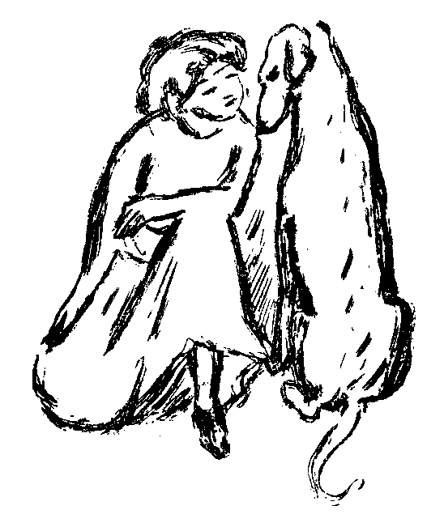
［＃改ページ］
朝早くとび起きて、頭はすがすがしく、気持は澄み、からだも夏の
衣裳のように軽やかな時にだけ、彼は出かける。別に食い物などは持って行かない。みちみち、新鮮な空気を飲み、健康な
香を鼻いっぱいに吸いこむ。
猟具も家へ置いて行く。彼はただしっかり眼をあけていさえすればいいのだ。その眼が網の代りになり、そいつにいろいろなものの
影像がひとりでに引っかかって来る。
最初に網にかかる
影像は、道のそれである。野梅と桑の実の豊かにみのった二つの生垣に挟まれて、すべすべした砂利が骨のように露出し、破れた血管のように
轍の跡がついている。
それから今度は小川の
影像をつかまえる。それは曲り角ごとに白く泡だちながら、柳の
愛撫の下で眠っている。魚が一匹腹を返すと、銀貨を投げこんだようにきらきら光り、細かい雨が降りだすと、小川は
忽ち鳥肌をたてる。
彼は動く麦畑の
影像を捕える。食欲をそそる
苜蓿や、小川に縁どられた牧場の
影像を捕える。通りすがりに、一羽の
雲雀が、あるいは
鶸が飛び立つのをつかまえる。
それから、彼は林のなかへはいる。すると、われながらこんな繊細な感覚があったのかと思うようだ。
好い
香がもう全身にしみわたり、どんな鈍いざわめきも聞き逃さない。そしてすべての樹木と相通じるために、彼の神経は木の葉の葉脈に結びつく。
やがて、興奮のあまり気持がへんになってくる。何もかもはっきりしすぎる。からだのなかが
醗酵したようになる。どうも気味がわるい。そこで林を出て、
鋳型作りの職人たちが村へ帰って行く、その後ろを遠くからつける。
林の外へ出ると、ちょうどいま沈もうとする太陽が、その
燦然たる雲の衣裳を地平線のうえに脱ぎすて、それが入り交り折り重なってひろがっているのを、いっとき、眼がつぶれるほど見つめている。
さて、頭のなかをいっぱいにして家へ帰って来ると、部屋のランプを消しておいて、眠る前に永い間、それらの
影像を一つ一つ数え挙げるのが楽しみだ。
影像は、素直に、思い出のまにまに
蘇って来る。その一つ一つがまた別の一つを呼び覚まし、そしてその
燐光の群れは、ひっきりなしに新手が加わってふえて行く――あたかも、一日じゅう追い回され、散り散りになっていた
鷓鴣の群れが、夕方、もう危険も去って、鳴きながら
畦の
窪みに互いに呼び交しているように。
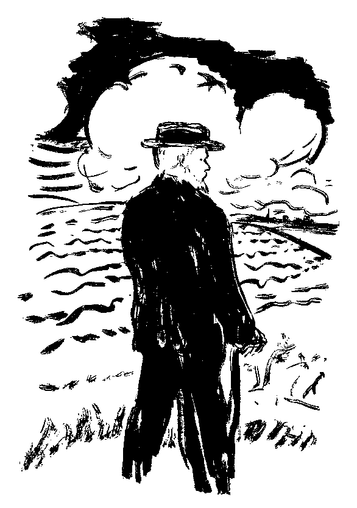
［＃改ページ］
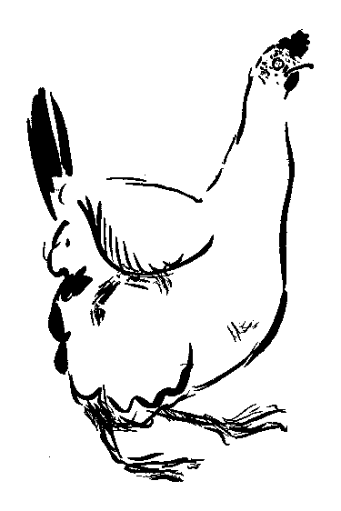
戸をあけてやると、両脚を
揃えて、いきなり鶏小屋から飛び下りて来る。
こいつは地味な
粧いをした普通の雌鶏で、金の卵などは決して産まない。
外の明るさに眼が
眩み、はっきりしない足どりで、二足三足庭の中を歩く。
まず眼につくのは灰の山である。彼女は毎朝そこでいっとき気晴らしをやる習慣になっている。
彼女は灰の上を転げ回り、灰の中にもぐり込み、そして羽をいっぱいに膨らましながら、激しく一
羽搏きして、夜ついた
蚤を振い落す。
それから今度は深い皿の置いてあるところへ行って、この前の夕立でいっぱい
溜っている水を飲む。
彼女の飲み物は水だけだ。
彼女は皿の縁の上でうまくからだの調子をとりながら、一口飲んではぐっと首を伸ばす。
それが済むと、あたりに散らばっている
餌を拾いにかかる。
柔らかい草は彼女のものである。それから、虫も、こぼれ落ちた麦粒も。
彼女は
啄んで、疲れることを知らない。
時々、ふっと立ち止る。
赤いフリージア帽を頭に載せ、しゃんとからだを伸ばし、眼つき鋭く、胸飾りも引立ち、彼女は両方の耳で代るがわる聴き耳を立てる。
で、別に変ったこともないのを確かめると、また餌を捜し始める。
彼女は、神経痛にかかった人間みたいに、硬直した脚を高くもち上げる。そして、指を
拡げて、そのまま音のしないようにそっと地べたへつける。
まるで
跣足で歩いているとでも言いたいようだ。
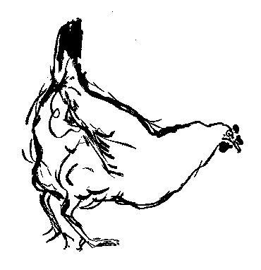
［＃改ページ］
彼は一度も鳴いたことがない。一晩も鶏小屋で寝たことがなく、それこそ一羽の
雌鶏さえ知らなかった。
彼のからだは木でできていて、腹の真ん中に鉄の脚が一本ついている。そして、もう何年となく、今ではとても建てられそうもない天主堂の上で暮している。それはちょっと
納屋みたいな建物で、その
棟瓦の線はまず牛の背中と同じくらいまっすぐである。
ところで、今日、その天主堂の向うの端に石屋の連中が姿を現わした。
木の雄鶏はじっと彼らの方を眺めていると、そのとき急に風が吹いて来て、無理やり後ろを向かされてしまう。
で、それから振向いて見る度に、新しい石が積み上げられては、眼の前の地平線を少しずつ
塞いで行った。
やがて、ぐっと首を持ち上げながら、よく見ると、やっとでき上がった鐘楼のてっぺんに、今朝まではそんな所にいなかった若い雄鶏が一羽止っている。どこから舞い込んで来たか、こやつは、
尻尾をはね上げ、いっぱし歌でもうたえそうに口をあけ、そして片方の
翼を腰のところに当てたまま、どこからどこまでま新しく、陽の光をいっぱいに受けて輝いている。
まず、二羽の雄鶏はぐるぐる回る競争をする。しかし、古い木の雄鶏はすぐ力が尽きて負けてしまう。一本しかない足の下で、
梁が今にも崩れ落ちそうになっている。彼は危うく倒れようとして、体を突っ張りながら前へのめる。彼は
軋み、そして止る。
すると、今度は大工たちがやって来る。
彼らは天主堂のこの虫のついた部分を取り壊し、その雄鶏を下ろして来ると、それを持って村じゅうを練り歩く。誰でも
祝儀さえ出せば、そいつにさわっていい。
或る連中は卵を一つ、或る連中は銅貨を一枚出す。ロリオの奥さんは銀貨を一枚出す。
大工たちはたらふく酒を飲み、それからめいめいその雄鶏の奪い合いをした揚句、とうとうそいつを焼いてしまうことに決める。
彼らはまず
藁と
薪束を積み上げて雄鶏の巣を作ってやり、それから、火をつける。
木の雄鶏はぱちぱちと気持よく燃え、その炎は空に昇って、彼はちゃんと天国にたどりつく。

毎朝、止り木から飛び降りると、雄鶏は相手がやっぱり
彼処にいるかどうか眺めてみる――相手はやっぱりそこにいる。
雄鶏は、自慢を許すなら、地上のあらゆる競争者を負かしてしまった――が、この相手、こいつは手の届かないところにいる、これこそ勝ち難き競争者である。
雄鶏は叫びに叫ぶ。呼びかけ、挑みかけ、脅しつける――しかし相手は、決った時間が来なければ
応えない。それもだいいち答えるのではない。
雄鶏は見得をきり、羽を膨らます。その羽はなかなか悪くなく、青いところもあれば、銀色のところもある――しかし、相手は、青空のただなかに、まばゆいばかりの金色である。
雄鶏は自分の雌鶏をみんな呼び集め、そしてその先頭に立って歩く。見よ、彼女らは残らず彼のもの。どれもこれも彼を愛し、彼を
畏れている――が、相手は
燕どものあこがれの主である。
雄鶏はすべてに浪費家である。
処きらわず、恋の句点を打ちまわり、ほんのちょっとしたことに、金切声を張りあげて
凱歌を奏する――しかし相手は、折も祈、新妻を迎える。そして空高く、村の婚礼を告げ知らす。
雄鶏は
妬ましげに
蹴爪の上に伸び上がって、最後の決戦を試みようとする。その尾は、さながらマントの
裾を剣ではね上げているようだ。彼は、
鶏冠に真っ赤に血を注いで戦いを挑み、空の雄鶏は残らず来いと身構える――しかし、相手は、
暴風に
面を
曝すことさえ恐れないのに、今はただ、微風に
戯れながらくるりと向うをむいてしまう。
そこで、雄鶏は、日が暮れるまで躍起となる。
彼の雌鶏は一羽一羽帰って行く。彼は声を
嗄らし、へとへとになり、もう暗くなってきた中庭に、たった独り残っている――が、相手は、今もまだ太陽の最後の炎を浴びて輝きわたり、澄みきった声で、平和なゆうべのアンジェリュスをうたっている。
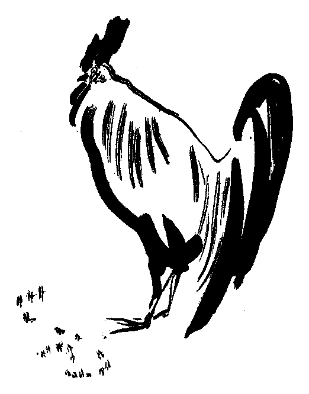
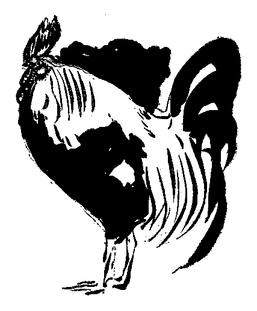
［＃改ページ］
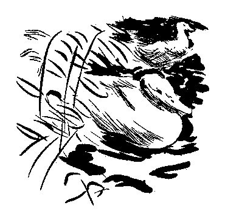
まず雌の家鴨が先に立って、両脚でびっこを引きながら、いつもの
水溜りへ泥水を浴びに出かけて行く。
雄の家鴨がそのあとを追う。
翼の先を背中で組み合せたまま、これもやっぱり両脚でびっこを引いている。
で、雌と雄の家鴨は、なにか用件の場所へでも出かけて行くように、黙々として歩いて行く。
最初まず雌の方が、鳥の羽や、鳥の
糞や、
葡萄の葉や、わらくずなどの浮んでいる泥水の中へ、そのまま滑り込む。ほとんど姿が見えなくなる。
彼女は待っている。もういつでもいい。
そこで今度は雄が入って行く。彼のごうしゃな彩色は
忽ち水の中に沈んでしまう。もう緑色の頭と
尻のところの
可愛い巻毛が見えるだけだ。どちらもいい気持でじっとそうしている。水でからだが暖まる。その水は誰も取換えたりはしない。ただ
暴風雨の日にひとりでに新しくなるだけだ。
雄はその平べったい
嘴で雌の
頸を軽く
噛みながら締めつける。いっとき彼は
頻りにからだを動かすが、水は重く
澱んでいて、ほとんど
漣も立たないくらいだ。で、すぐまた静かになると、なめらかな水面には、澄み渡った空の一隅が黒く映る。
雌と雄の家鴨はもうちっとも動かない。太陽の下で
茹って寝込んでしまう。そばを通っても誰も気がつかないくらいだ。彼らがそこにいることを知らせるのは何かと言えば、たまに水の
泡が幾つか浮び上がってきて、澱んだ水面ではじけるだけである。
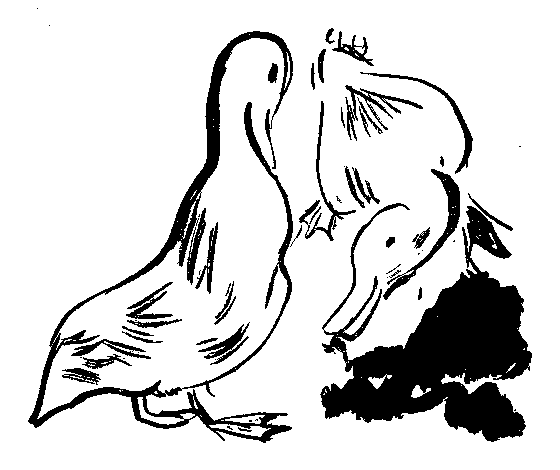
［＃改ページ］
チエンネットも村の娘たちとおんなじに、パリへ行きたいと思っている。しかし、その彼女が鵞鳥の番さえできるかどうか怪しいものだ。
実をいうと、彼女は鵞鳥を追って行くというよりも、そのあとについて行くのだ。編物をしながら、機械的に、その一団のあとを歩いて行くだけで、あとは大人のように分別のあるトゥウルウズの鵞鳥に任せきりにしている。
トゥウルウズの鵞鳥は、道順も、草のよしあしも、小屋へ帰る時刻もちゃんと知っている。
勇敢なことにかけては雄の鵞鳥もかなわないくらいで、悪い犬などが来ても立派に
姉妹の鵞鳥たちを
庇ってやる。彼女の
頸は激しく震え、地面とすれすれに蛇のようにくねり、それからまたまっすぐに起き上がる。その様子に、チエンネットはおろおろするばかりで、これには顔色なしである。で、万事うまくいったと見ると、彼女は意気揚々として、こんなに無事におさまっているのは誰のお
蔭だと言わんばかりに、鼻声で歌い始める。
彼女は、自分にはまだそれ以上のこともできると堅く信じている。
で、
或る夕方、とうとう村を出て行く。
彼女は
嘴で風をきり、羽をぺったりくっつけて、道の上をぐんぐん歩いて行く。女たちは、すれちがっても、こいつを止める勇気がない。気味の悪いほど速く歩いているからだ。
そして一方でチエンネットが、向うに取り残されたまま、てんから人間の力を失ってしまい、鵞鳥たちとおんなじに何の見分けもつかなくなっているうちに、トゥウルウズの鵞鳥はそのままパリへやって来る。
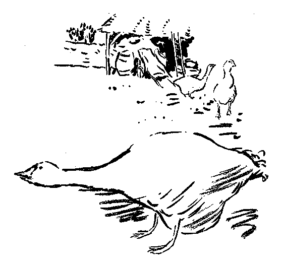
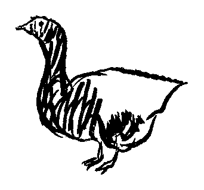
［＃改ページ］
彼女は庭の真ん中を気取って歩き回る。あたかも帝政時代の暮しでもしているようだ。
ほかの鳥たちは、暇さえあれば、めったやたらに、食ってばかりいる。ところが、彼女は、ちゃんと決った時間に食事をとるほかは、絶えず姿を立派に見せることに浮身をやつしている。羽には全部
糊がつけてある。そして
尖った翼の先で地面に筋を引く。自分の通る道をちゃんと描いておくようだ。彼女は必ずその道を進み、決してわきへは行かない。
彼女はあんまりいつも反り身になっているので、自分の脚というものを見たことがない。
彼女は決して人を疑わない。で、私がそばへ寄って行くと、早速もう自分に敬意を表しに来てくれたつもりでいる。
もう、彼女は得意そうに
喉をぐうぐう鳴らしている。
「
畏れながら七面鳥の君」と私は彼女に言う。「君がもし
鵞鳥か何かだったら、僕もビュッフォンがしたように君の
讃辞を書くところさ、君のその羽を一枚拝借してね。ところが、君はただの七面鳥にすぎないんだ」
きっと私の言い方が気に
障ったに違いない。彼女の頭にはかっと血が上る。
嘴のところに
癇癪の
皺が垂れ下がる。彼女は今にも真っ赤に怒り出しそうになる。で、その尾羽の扇子をぱさりと一つ鳴らすと、この気むずかしやの
婆さんは、くるりと向うをむいてしまう。
道の上に、またも七面鳥学校の寄宿生たち。
毎日、天気がどうであろうと、彼女らは散歩に出かける。
彼女らは雨を恐れない。どんな女も七面鳥ほど上手に
裾はまくれまい。また、日光も恐れない。七面鳥は日傘も持たずに出かけるなんていうことはない。
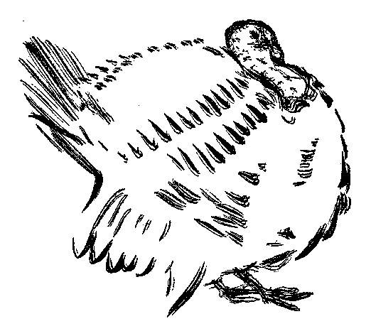
［＃改ページ］
これは私の家の庭に住む
佝僂女である。彼女は自分が佝僂のせいで、よくないことばかり考えている。
雌鶏たちの方では別になんにも言いはしない。ところが、だしぬけに、彼女はとびかかって行って、うるさく追い回す。
それから今度は頭を下げ、からだを前かがみにして、
痩せっぽちの脚に全速力を出して走って行くと、一羽の七面鳥が円く羽を
拡げているちょうどその真ん中を
狙って、堅い
嘴で突っかかる。この気どりやが、ふだんから
癪に
障ってしようないのだ。
そんな風で、頭を青く染め、ちょび
髭をぴくぴくさせ、いかにも兵隊好きらしく、彼女は朝から晩まで独りでぷりぷりしている。そうしては理由もなく
喧嘩を吹きかけるのだが、多分、しょっちゅうみんなが自分のからだつきや、
禿げ上がった頭や、へんに下の方についている
尻尾などを笑いものにしているような気がするのだろう。
そして、彼女はひっきりなしに、剣の切っ先のように空気を
劈く調子外れの鳴き声をたてている。
時々、彼女は庭を出て、どこかへ行ってしまう。お
蔭で、平和な
家禽一同をいっときホッとさせる。ところが、彼女はまたやって来る。前よりもいっそう
喧しく、騒々しい。そして、無茶苦茶に地べたを転げ回る。
いったい、どうしたのだ？
彼女は胸に一物あって、芝居をやっているのである。
彼女は野原へ行って卵を産んで来たのだ。
私は気が向けば、そいつを捜しに行ってもいい。
彼女は、佝僂のように、
埃のなかを転げ回っている。
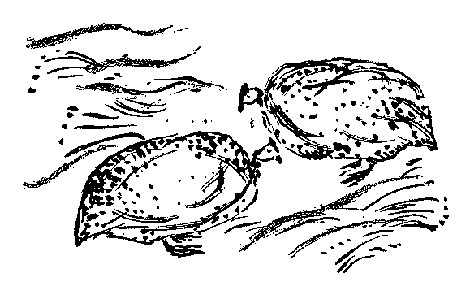
［＃改ページ］
彼らは家の上で
微かな太鼓のような音を立てるにしても――
日蔭から出て、とんぼ返りをし、ぱっと陽に輝き、また日蔭に帰るにしても――
彼らの落着きのない
頸は、指に
嵌めたオパールのように、生きたり、死んだりするにしても――
夕方、森のなかで、ぎっしりかたまって眠り、
槲の一番てっぺんの枝がその彩色した果実の重みで今にも折れそうになるにしても――
そこの二羽が互いに夢中になって
挨拶を交し、そして突然、互いに
絡み合うように
痙攣するにしても――
こっちの一羽が、異郷の空から、一通の手紙を持って帰って来て、さながら遠く離れた女の友の思いのように飛んで来るにしても（ああ、これこそ一つの
証拠！）――
そのさまざまの鳩も、初めは面白いが、しまいには退屈になって来る。
彼らはひとところにじっとしていろと言われても、どうしてもそれができないだろう。そのくせ、いくら旅をして来ても、一向利口にならない。
彼らは一生、いつまでたってもちっとばかりお
人好しである。
彼らは、
嘴の先で子供が作れるものと頑固に思い込んでいる。
それに、全くしまいにはやりきれなくなって来る――しょっちゅう
喉に何か詰っているという、例の祖先伝来の妙な癖は。
二羽の鳩が、ほら「さあ、
こっちにきて、あんた……さあ、
こっちにきて、あんた……さあ、
こっちにきて、あんた……」
注 鳩の啼き声「モン・グルルロ」は、ここでは親しい者（雄鳩）に呼びかける「モン・グロ」と似せている。
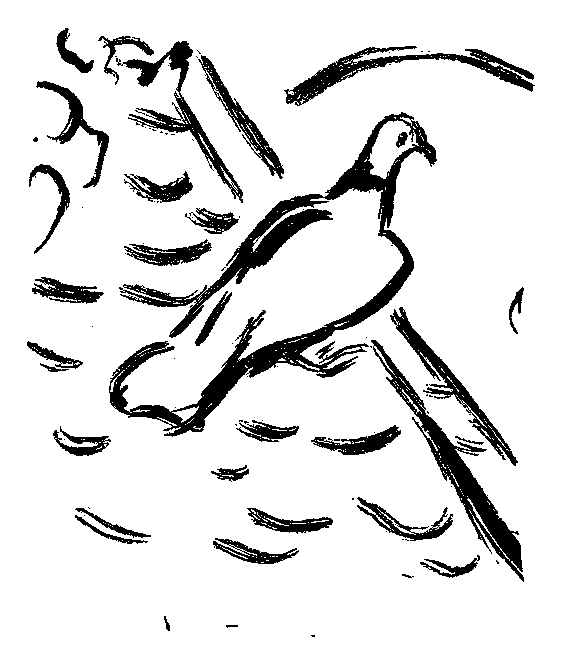
［＃改ページ］
今日こそ間違いなく結婚式が挙げられるだろう。
実は昨日のはずだった。彼は盛装をして待っていた。花嫁が来さえすればよかった。花嫁は来なかった。しかし、もうほどなく来るだろう。
意気揚々と、インドの
王子然たる足どりで、彼はそのあたりを散歩する。新妻への数々の贈物は、ちゃんと自分の身につけて持っている。愛情がその彩色の輝きを増し、帽子の羽飾りは
竪琴のように震えている。
花嫁は来ない。
彼は屋根の頂に登り、じっと太陽の照らす方を眺める。彼は魔性の叫びを投げかける――
――レオン！ レオン！
こうして花嫁を呼ぶのである。何ものも姿を見せず、誰も返事をしない。庭の鳥たちももう慣れっこになっていて、頭をあげようともしない。そういつまで感心ばかりしてはいられないのだ。彼は中庭に降りて来る。誰を恨むというでもない。それほど自分の美しさを信じている。
結婚式は明日になるだろう。
そこで、残りの時間をどうして過そうかと、ただ、あてもなく踏段の方へ歩いて行く。そして神殿の
階段でも登るように、一段一段、正式の足どりで登って行く。
彼は
裾長の上衣の裾を引き上げる。その裾は、多くの眼が注がれたまま離れなくなってしまったために、なにさま重くなっている。
彼は、そこでもう一度、式の予行をやってみるのである。
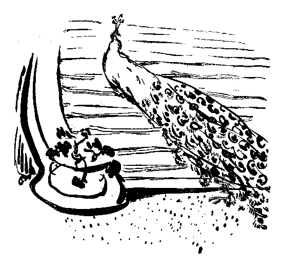
［＃改ページ］
彼は泉水の上を、雲から雲へ、白い
橇のように滑る。なぜなら、彼は、水の中に生じ、動き、そして消え
失せる綿雲だけに食欲を感じるからである。彼が望んでいるのは、その一きれである。そして、いきなり、雪の衣を
纏ったその
頸を突っ込む。
それから、女の腕が
袖口から現われるように、彼は首を引き出す。
なんにも取れない。
彼はじっと見つめている。雲は、
愕いて姿を消した。
一度
醒めた迷夢は、
忽ち
甦る。なんとなれば、雲は間もなく姿を現わし、
彼方、水面の波紋が消えて行くあたりに、また一つ雲が出て来るからである。
軽い
羽蒲団に乗って、静かに白鳥は
漕ぎながら、その方に近づく……。
彼は水に映る
空しき影を追うて疲れ、雲ひときれを捕える前に、おそらくはやがてこの妄想の犠牲となって、死に果てるであろう。
おい、おい、何を言ってるんだ……。
彼は
潜る度ごとに、
嘴の先で、養分のある泥の底をほじくり、
蚯蚓を一匹
銜えて来る。
彼は
鵞鳥のように
肥るのである。
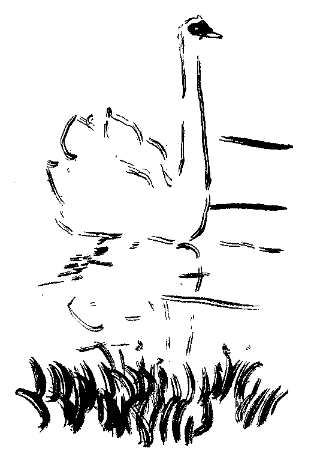
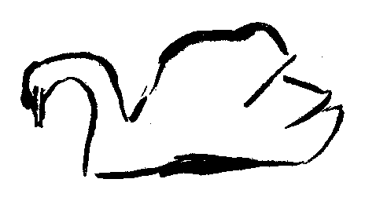
［＃改ページ］
私のは
鼠を食わない。そんなことをするのがいやなのだ。つかまえても、それを
玩具にするだけである。
遊び飽きると、命だけは助けてやる。それからどこかへ行って、
尻尾で輪を作ってその中に
坐り、
拳固のように格好よく引き締った頭で、余念なく夢想に
耽る。
しかし、
爪傷がもとで、鼠は死んでしまう。
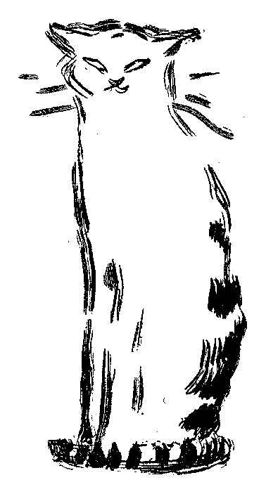
［＃改ページ］
ポアンチュウも、こんな季節になると外へ出しておくわけにいかない。おまけに、
扉の下から鋭い
唸り声を立てて風が吹きつけるので、彼は靴
拭いのところにさえいられなくなる。で、もっといい場所を捜しながら、私たちの
椅子の間に、そのごつい頭をもぐり込ませて来る。しかし、私たちは、
肘と肘をすれすれに、ぴったりからだをくっつけ合って、じっと火の上にかがみ込んでいる。で、私はポアンチュウを一つひっぱたく。父は足で押しのける。おふくろは
叱りとばす。姉は
空のコップを彼の鼻先へ突きつける。
ポアンチュウは
嚔をして、それでも念のために、誰もいない台所を
覗きに行く。
やがてまた戻って来ると、
膝で絞め殺されそうなのもものともせず、無理やり私たちの囲みを押し破って、とうとう
煖炉の一角に
辿り着く。
そこでしばらくぐずついた末に、とうとう
薪台のそばへ
坐り込むと、もうそれっきり動かない。彼は主人たちの顔をじっと見つめ、その眼つきがいかにも優しいので、こっちもつい叱れなくなってしまう。ただ、その代り、ほとんど真っ赤になっている薪台と、
掻き寄せた灰が、彼の
尻を
焦がす。
それでもそのままじっとしている。
みんなはまた彼に道をあけてやる――
「さあ、あっちへ行って！
馬鹿だね、お前は！」
しかし、彼は頑張っている。で、
野良犬どもの歯が寒さにがたがた震えている時刻に、ポアンチュウはぬくぬくと暖まり、毛を焦がし、尻を焼きながら、唸りたいのを我慢して、じっと泣き笑いをしている――眼にいっぱい涙を
溜めたまま……。
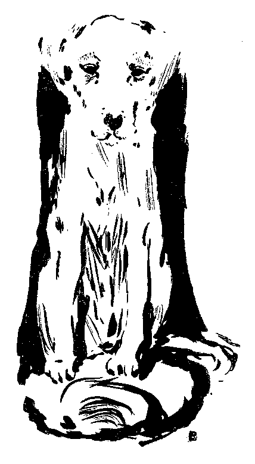
［＃改ページ］
これがいい、あれがいいと、とうとう捜しあぐんで、彼女には名前をつけないでしまった。で、彼女のことはただ「牝牛」という。そして、この名前が彼女には一番よく似合う。
それに、そんなことはどうでもいいのだ、食うものさえ食えれば！
ところが、青草でござれ、干草でござれ、野菜でござれ、穀物でござれ、パンや塩に至るまで、なんでも食いほうだいである。おまけに、彼女は何に限らず、いつでも二度ずつ食う。というのが、つまり
反芻するのである。
私の姿を見ると、彼女は軽い小刻みな足どりで、割れた木靴を引っかけ、脚の皮膚を白靴下のようにきゅっと
穿いて、早速駆け寄って来る。私が何か食い物を持って来たものと思い込んでやって来るのである。で、その度ごとに、私は彼女の姿に見とれながら、こう言うよりほかには言うべき言葉を知らない――「さあ、お上がり！」
しかし、彼女が腹に詰め込むのは、脂肪にはならないで、みんな乳になる。一定の時刻に、彼女の乳房はいっぱいになり、真四角になる。彼女はちっとも乳を出し惜しみしない――牛によっては出し惜しみをするやつがある――ゴムのような四つの乳首から、ちょっと押えただけで、気前よくありったけの乳を出してしまう。足も動かさなければ、
尻尾も振らない。その代り、その大きな柔らかな舌で、楽しそうに雇い女の背中を
舐めている。
独り暮しであるにも
拘らず、盛んな食欲のお
蔭で、退屈するどころではない。最近に産み落した
犢のことをぼんやり
想い出して、わが子恋しさに
啼くというようなことさえ
稀である。ただ、彼女は人の訪問を喜ぶ。額の上ににゅっと角を持ち上げ、
脣には一筋の
涎と一本の草を垂らして舌なめずりをしながら、愛想よく迎えるのである。
男たちは、怖いものなしだから、そのはち切れそうな腹を
撫でる。女どもは、こんな大きな獣があんまりおとなしいので驚きながら、もう用心するのも、じゃれつかないように用心するだけで、思い思いに幸福の夢を描くのである。
彼女は、私に角の間を
掻いてもらうのが好きである。私は少し後すさりをする。彼女が
嬉しそうに寄って来るからである。大きな
図体で、おとなしく、いつまでも黙ってそうさせているので、とうとう私は彼女の
糞を踏んづけてしまう。
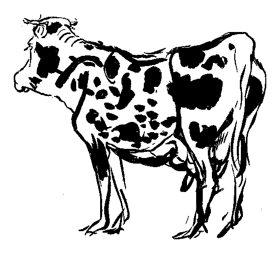
［＃改ページ］
フィリップは私を起しに来て、夜なかに起きてじっと耳を澄ましてみたが、彼女は静かな息づかいをしていたと言う。
しかし、今朝からまた、その様子が心配になって来た。
よく乾いた干草をやってみたが、見向きもしない。
そこで今度は取りたての青草を少しやってみると、ブリュネットはふだんはとても好物のくせに、ほとんどそれに口をつけない。彼女はもう
犢の面倒もみない。そして、犢が乳を飲もうとして、ぎごちない脚で
起ち上がると、その
鼻面で押され、そのたんびにひょろひょろする。
フィリップは二匹を別々にして、犢を母親から遠いところに
繋ぐ。ブリュネットはそれにも気がつかない風だ。
フィリップの心配そうな様子は、私たちみんなに乗り移る。子供たちまで起き出そうとする。
獣医がやって来て、ブリュネットを診察し、牛小屋から出してみる。彼女は壁に突き当り、出口の敷居に
躓く。今にも倒れそうだ。そこで、また小屋へ入れておくことにする。
「だいぶ悪いようですな」と、獣医は言う。
私たちは、なんの病気か
訊いてみる勇気もない。
獣医はどうも
産褥熱らしいと言う。よく命にかかわることもある病気で、それも特にいい乳牛に多い。で、もう駄目だと思われていた牝牛を自分が助けてやった思い出話を一つ一つ話して聞かせながら、彼は
壜のなかの液体をブリュネットの腰のあたりに筆で一面に塗りつける。
「こいつはちょっと
発泡膏みたいな働きをするんです」と彼は言う。「正確な調合は知りません。パリから来るもんです。これで脳の方さえやられなければ、もうひとりでに
癒りますよ。万一、駄目なようでしたら、ひとつ冷水療法をやってみましょう。そんなことをすると、なんにも知らない百姓はびっくりしますがね。つまり、あなただから申上げるわけです」
「やってみて下さい」
ブリュネットは、じっと
藁の上に寝たまま、それでもまだ頭の重みだけは支えている。もう口は動かさなくなった。じっと息をこらして、自分のからだの奥で何かが起っている様子に聴き入っているように見える。

毛布でからだを包んでやる。角と耳がだんだん冷えて来るからである。
「いよいよ耳が垂れちまうまでは、まだ望みがあるから」とフィリップは言う。
二度まで、彼女は起ち上がりかけたが、駄目だった。息遣いが荒くなり、それもだんだん間遠になって来る。
そのうちに、とうとう左の
脇腹へがっくりと首を落してしまう。
「まずいことになって来た」とフィリップは言って、しゃがみ込んだまま、そっとひとりごとのように優しく話しかける。
首はもう一度あがりかけて、またぐったり
秣桶の縁に倒れかかる。それがあんまりがっくりと行ったので、そのぶっつかった鈍い音に、私たちは思わず「あ！」と声を立てる。
私たちは、ブリュネットがぺしゃっとなってしまわないように、そのまわりに藁を積み上げる。
彼女は
頸と脚を伸ばし、ちょうど牧場で
暴風雨の日にやるように、長々と寝そべっている。
獣医はとうとう血を取ることに決める。彼はあんまりそばへは寄らない。腕の方はもう一人の医者と変りはないが、しかしちっと思い切りが悪いという
噂だ。
最初、
木槌で
叩くと、
刃針が血管の上を滑ってしまう。そこでもう一度もっとしっかり手元を決めて叩くと、
錫の手桶のなかにどくどくと血が流れ出す。その桶には、ふだんなら乳がいっぱいなみなみと
溜るのである。
血を止めるために、獣医は血管のなかへ鋼鉄の針を通す。
それから、だいぶ楽になったらしいブリュネットのからだに、額からずっと
尻尾の先まで、井戸水でしめした湿布を当て、それをしょっちゅう取換えてやる。すぐ暖まってしまうからである。彼女は震えもしない。フィリップはしっかり角をつかまえて、頭が左の脇腹にぶっつからないようにしている。
ブリュネットは、すっかり任せきったように、もう身動きもしない。気分がよくなったのか、それともますます容態が悪くなったのか、一向わからない。
私たちは悲しい気持になっている。しかし、フィリップの悲しみは、仲間の一匹の苦しむ様子をそばで見ている動物のそれのように
沈鬱である。
彼の女房が朝のスープを持って来る。彼は腰掛に腰を下ろしたまま、まずそうにそれを食い、おまけにすっかりは食わない。
「いよいよ、おしまいだ」と彼は言う。「からだが膨れて来たよ！」
私たちは、初め、半信半疑である。しかし、フィリップの言ったのは本当だった。彼女のからだは眼に見えて膨れて来、それがちっとも元へ戻らない。なかへはいった空気がそのまま抜けなくなってしまったようだ。
フィリップの女房は訊く――
「死んだの？」
「見ないでいい、お前なんか！」と、フィリップは
邪慳な調子で言う。
フィリップのお
内儀さんは庭へ出て行く。
「そうすぐにゃ捜しに行けないぜ、代りのやつは」と、フィリップは言う。
「何の代りだ？」
「ブリュネットの代りでさ」
「行く時には俺がそう言う」と、私は自分でもびっくりするほど主人声で言う。
私たちは、この出来事が悲しいというよりも、むしろ腹立たしいのだという風に思おうと努める。そして既に、ブリュネットは死んだと口に出して言っている。
しかし、夕方、私は教会の
鐘撞き男に道で会ったが、彼にこう言いかけて、どういうわけで思いとどまったのかわからない――
「さあ、百スーやるぜ。ひとつ弔いの鐘を撞いてくれ。俺のうちで死んだものがあるんだから」
［＃改ページ］
Le B

uf
今朝もいつものように戸があくと、カストオルは別に
躓くようなこともなく、牛小屋を出て行く。まず、水槽の底に
溜った水を、ごくごくとゆっくり自分のぶんだけ飲み、あとから来るポリュックスのぶんは残しておく。それから、夕立のあとの
樹のように鼻の先から
雫を垂らしながら、ちゃんとそのつもりで、おとなしくのそのそと、いつもの場所へやって行って、車の
軛の下へからだを突っ込む。
角を
繋がれたまま、頭はじっと動かさずに、彼は腹に
皺を寄せ、
尻尾でもの
憂げに
黒蠅を追いながら、女中が
箒を手に持ったまま居眠りをしているように、ポリュックスが来るまで一人でもぐもぐ口を動かしている。
ところが、庭の方では、下男たちがあわただしく怒鳴ったり、
喚いたり、
罵ったり、犬は犬で、見慣れない人間でも来たように、盛んに
吠えたてている。
今日は初めて
刺針のいうことを聴かず、左右に逃げ回り、カストオルの
脇腹にぶっつかり、腹を立て、そして車に繋がれてからも、まだ一生懸命自分たちの共同の軛を揺すぶろうとしている、これがあのおとなしいポリュックスなのだろうか？
違う。確かに別ものだ。
カストオルは、いつもの相棒と勝手が違うので、
顎を動かすのをやめる。するとその時、自分の眼のそばに、まるで見覚えのない牛の濁った眼が見える。
夕陽を浴びて、牛の群れは、牧場のなかをのろのろと、彼らの影の軽い
耘鍬を
牽いて行く。
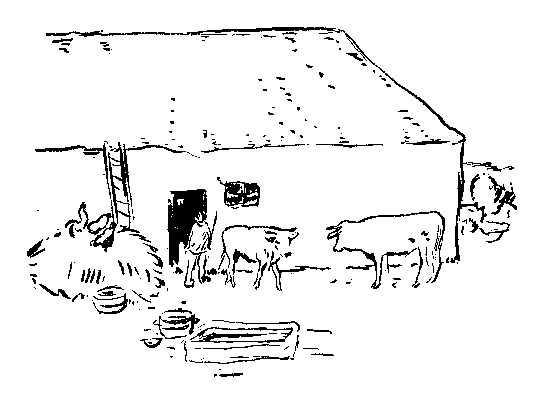
［＃改ページ］
牧場の真ん中にはたった一本の
槲の
樹があるきりだ。で、牛どもはその
葉蔭をすっかり占領している。
じっと首をたれ、彼らは太陽の方に角を突き出す。
これで、虻さえいなければ、いい気持だ。
ところが、今日は実際のところ、虻が食うこと、食うこと。
貪婪に、無数に群がりながら、黒いやつは
煤の板のように
塊って、眼や鼻の
孔や
脣のまわりにへばりつき、青いやつは、特に好んで新しい擦り傷のあるところへ吸いつく。
一匹の牛が皮の前掛を振うか、あるいは乾いた地面を
蹄で
蹴るかすると、虻の雲が
唸り声を立てて移動する。ひとりでに
湧いて出るようだ。
おそろしく蒸し暑い。で、
婆さん連中は、戸口の所で、
暴風雨の気配を
嗅ぎ、こわごわ冗談を言う。――
「そら、ゴロゴロさんに気を付けな」と、彼女らは言う。
向うの方で、光の
槍の最初の一
閃が、音もなく空を
劈く。雨が一滴落ちる。
牛もそれに気がつき、頭を持ち上げる。槲の木のはずれまでからだを運び、辛抱強く息をはいている。
彼らはちゃんと知っている。いよいよ、善い虻がやって来て、悪い虻を追い払ってくれるのだ。
最初は間をおいて、一つ一つ、やがて
隙間なく、全部ひと塊りになって、ちぎれちぎれの空から、一方が
雪崩れ落ちると、敵は次第にたじろぎ、まばらになり、散り散りに消え
失せる。
やがて、そのあぐら鼻の先から、一生
摺り切れない
尻尾の先に至るまで、牛どもは勝ち誇った水の虻の軍勢の下で、全身滝となって、心地よげにからだをくねらせ始めるのである。
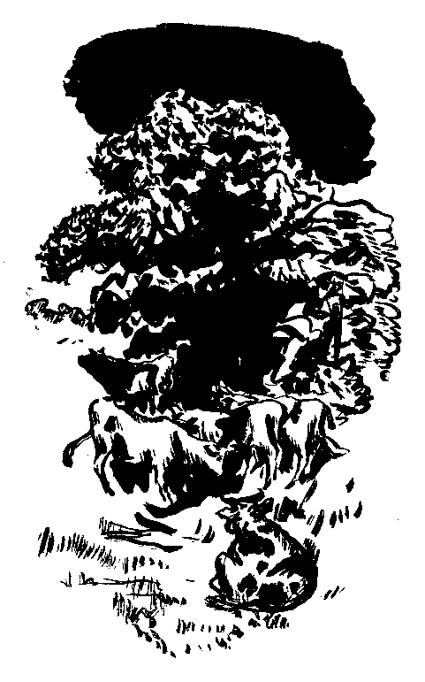
［＃改ページ］
釣師は足どりも軽く、イヨンヌ河の岸を歩きながら、糸の先の
銀蠅を水面にぴょいぴょい躍らせている。
その銀蠅は、ポプラの並木の幹に止ってるやつをつかまえる。ポプラの幹は、しょっちゅう家畜どもにからだをこすりつけられて、てらてら光っている。
彼は素っ気なく釣糸を投げこみ、それをまた悠々と引き上げる。
新しく場所を変えるたびに、そこが一番いい場所のような気がする。が、しばらくすると、またそこを離れて、生垣に渡してある
梯子を
跨ぎ、牧場から牧場へ移って行く。
突然、ちょうど太陽がじりじり照りつけている大きな牧場を横切って行く途中で、彼は立ち止る。
向うの方で、
牝牛どもがのんびりと寝そべっているなかから、牡牛がのっそり
起ち上がったのである。
こいつは有名な牡牛で、その堂々たる体格には道を通る人々が眼を見張るくらいだ。人々は遠くからそっと感心して眺め入る。そして、これまでのところはまだそんなことはなかったにしても、彼がその気になれば、牛飼いなどは角の弓にかけて、矢でも飛ばすように空中に
抛り上げるかも知れない。なんでもない時は、それこそ
仔羊よりもおとなしいが、何かのはずみで、いきなり猛烈に暴れ出す。で、そばにいると、いつどんな目に会うかもわからない。
釣師は、横眼で彼の様子を観察する。
「逃げ出してみたところで、牧場の外へ出ないうちに、きっとあの牡牛のやつに追いつかれちまうだろう」と、彼は考える。「そうかと言って、泳ぎも知らないで川へ飛び込めば、
溺れるに決ってる。地べたに転がって死んだ
真似をしていると、牡牛はこっちのからだを
嗅ぎ回すだけで、なんにもしないという話だ。ほんとにそうだろうか？ 万一やつがいつまでたってもそばを離れなかったら、それこそ気が気じゃあるまい。それよりは、そっと知らん顔をしてやり過した方がいい」
そこで、釣師は、相変らず釣りを続けながら、牡牛などどこにいるかというような様子をしている。そうやって、うまく相手の眼をくらますつもりである。
襟首は
麦藁帽の
蔭で、じりじり
灼けつくようだ。
彼は、駆け出したくてうずうずしている足を無理に引き止めて、わざとゆっくり草を踏みつけて行く。彼は英雄気どりで、糸の先の銀蠅を水のなかに浸す。隠れるにしても、ほんの時々ポプラの蔭に隠れるだけだ。彼は重々しく生垣に渡してある梯子の所へ
辿りつく。ここまで来れば、くたくたになった手足に最後の努力をこめて、無事に牧場の外へ飛び降りられるわけだ。
それに、何も
慌てることはない。
牡牛はこんな男に用はない。ちゃんと牝牛たちのそばにいるのである。
彼が起ち上がったのは、
気だるさのあまり動いてみたまでで、言わば我々が伸びをするようなものである。
彼はその縮れ毛の頭を夕風に振向ける。
眼を半分つぶったまま、時々思い出したように
啼く。
一声もの
憂げに
吼えては、その声にじっと耳を澄ます。
女どもは、彼の額にある
捲毛で、それが牡牛だということを見分ける。
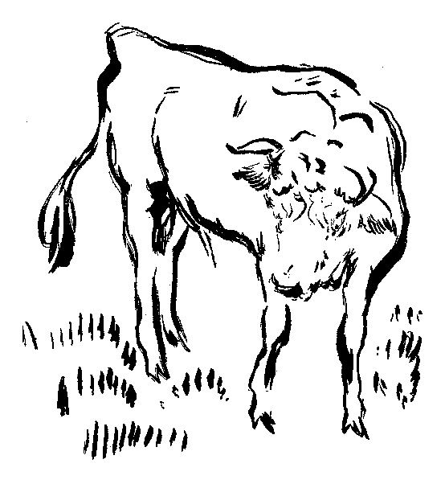
［＃改ページ］
決して立派ではない、私の馬は、むやみに節くれ立って、眼の上がいやに落ち
窪み、胸は平べったく、
鼠みたいな
尻尾とイギリス女のような糸切歯を持っている。しかし、こいつは、私をしんみりさせる。いつまでも私の用を勤めながら、一向逆らいもせず、黙って勝手に引回されているということが、考えれば考えるほど不思議でしようがないのである。
彼を車につける度ごとに、私は、彼が今にも唐突な身振りで「いやだ」と言って、車を外してしまいはせぬかと思う。
どうして、どうして。彼は矯正帽でもかぶるように、その大きな頭を上げ下げして、素直にあとすさりをしながら、
轅の間にはいる。
だから、私も彼には
燕麦でも
玉蜀黍でもちっとも惜しまず、たらふく食わせてやる。からだにはうんとブラシをかけ、毛の色に桜んぼのような
光沢が出るくらいにしてやる。
鬣も
梳くし、細い尻尾も編む。手で、また声で、機嫌をとる。眼を海綿で洗い、
蹄に
蝋を引く。
いったい、こんなことが彼には
嬉しいだろうか。
わからない。
彼は
屁をひる。
特に、彼が私を車に載せて引いて行ってくれる時に、私はつくづく彼に感心する。私が
鞭で殴りつけると、彼は足を早める。私が止れと言うと、ちゃんと私の車を止めてくれる。私が手綱を左に引くと、おとなしく左へ曲る。わざと右へ曲るようなこともせず、私をどこか
蹴とばして溝へ
叩き込むようなこともしない。
彼を見ていると、私は心配になり、恥ずかしくなり、そして
可哀そうになる。
彼はやがてその半睡状態から覚めるのではあるまいか？ そして、容赦なく私の地位を奪い取り、私を彼の地位に追い落すのではあるまいか？
彼は何を考えているのだろう。
彼は屁をひる。続けざまに屁をひる。
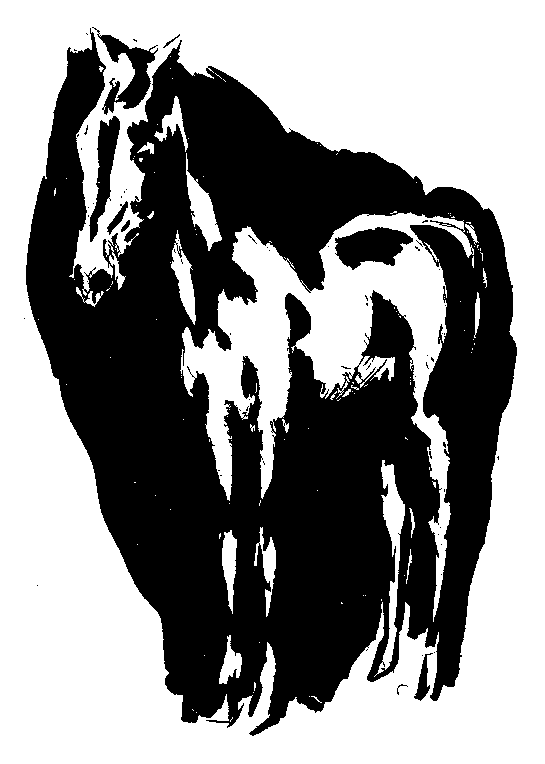
［＃改ページ］
L'

ne
何があろうと、彼は平気だ。毎朝、彼は小役人のようにせかせかした、ごつい、小刻みな足どりで、配達夫のジャッコを車に載せて行き、ジャッコは、町で頼まれて来たことづけや、香料とか、パンとか、肉屋の肉とか、二、三の新聞、一通の手紙などを村々の家へ届けて回る。
この巡回が終ると、ジャッコと驢馬は今度は自分たちのために働く。馬車が荷車の代りになる。彼らは一緒に
葡萄畑や、林や、
馬鈴薯畑に出掛けて行く。そしてある時は野菜を、ある時はまだ
緑い
箒草をという風に、あれや、これや、日によっていろんなものを積んで帰る。
ジャッコはひっきりなしに、なんの意味もなく、まるで
鼾でもかくように、「ほい！ ほい！」と言っている。時々、驢馬はふっと
薊の葉を
嗅いでみたり、急に何か気紛れを起したりすると、もう歩かなくなる。するとジャッコは彼の
頸を抱きながら、前へ押し出そうとする。それでも驢馬がいうことをきかないと、ジャッコは彼の耳に
噛みつく。
彼らは堀のなかで食事をする。主人は食い残しのパンと
玉葱を食い、驢馬は勝手に好きなものを食う。
彼らが帰る時は、もう夜になっている。彼らの影が、
樹から樹へ、のろのろと通り過ぎて行く。
突然、ものみながその底に沈み、そして既に眠っていたあたりの静寂の湖が、けたたましく崩れ落ちる。
いったいどこの女房が、こんな時刻に、
錆びついた井戸車を
軋ませながら一生懸命井戸の水を
汲み上げているのだろう？
それは、驢馬が帰って来ながら、ありったけの声を振絞って、なに平気だ、なに平気だと、声が
嗄れるほど
啼き続けているのである。
大人になった
兎。
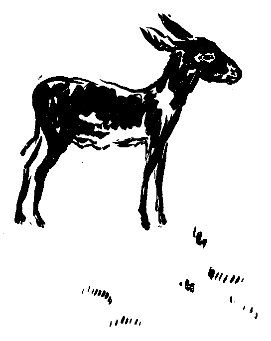
［＃改ページ］
ぶうぶう言いながら、しかも、我々みんなでお前の世話をしたかのように、人に
馴れきって、お前はどこへでも鼻を突っ込み、脚と一緒にその鼻で歩いてる。
お前は
蕪の葉のような耳の陰に、黒すぐりの小さな眼を隠している。
お前はまるすぐりのように便々たる腹をしている。
お前はまたまるすぐりのように長い毛を生やし、またまるすぐりのように透き通った肌をし、先の巻いた短い
尻尾を付けている。
ところで、意地の悪い連中は、お前のことを「
穢ならしい豚！」と言うのだ。
彼らは言う――なに一つお前っ方ではこれが嫌いと言うものがないのに、みんなには嫌われ、その上、お前は水を飲んでも、
脂肪ぎった皿の水ばかり飲みたがる、と。
だが、それは全くの
誹謗だ。
そんなことを言う
奴は、ひとつお前の顔を洗ってみるがいい。お前は血色のいい顔になる。
お前が不精ったらしいのは、彼らの罪である。
床の延べようで寝方も違う。不潔はお前の第二の天性に過ぎない。
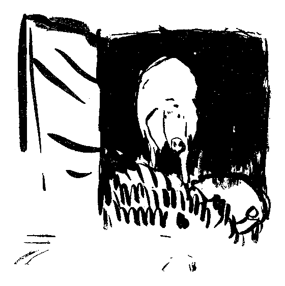
草原に放すが
否や、豚は食い始める。その鼻はもう決して地べたを離れない。
彼は柔らかい草を選ぶわけではない。一番近くにあるのにぶつかって行く。
鋤の刃のように、または盲の
土竜のように、行き当りばったりに、その
不撓不屈の鼻を前へ押し出す。
それでなくても
漬物樽のような形をした腹を、もっと丸くすることより考えていない。天気がどうであろうと、そんなことは一向お構いなしである。
さっき、肌の
生毛が、正午の陽ざしに燃えようとしたことも平気なら、今また、
霰を含んだあの重い雲が、草原の上に
拡がりかぶさろうとしていても、そんなことには
頓着しない。
そう言えば、
鵲は、
弾機仕掛けのような飛び方をして逃げて行く。七面鳥は生垣のなかに隠れ、
初々しい
仔馬は
槲の
木蔭に身を寄せる。
しかし、豚は食いかけたもののある所を動かない。
彼は、一口も残すまいとする。
落着かなくなって
尻尾を振るでもない。
雹がからだにばらばらと当ると、ようやく、それも不承不承
唸る――
「うるせえやつだな、また真珠をぶっつけやがる！」
［＃改ページ］
彼らはれんげ畑から帰って来る。今朝から、そこで、からだの影に鼻をくっつけて草を食っていたのである。
不精な羊飼いの合図で、お決りの犬が、羊の群れをそっちと思う方から追い立てる。
その群れは、道をいっぱいに占領し、溝から溝へ波を打ち、
溢れ出る。
或る時はまた、密集して一体となり、ぶよつき、
老婆のような小刻みな足どりで、地べたを踏みならす。それが駆け出し始めると、その無数の脚が
蘆の葉のような音を立て、道の上の
埃は
蜂の巣をつついたように舞い上がる。
こっちの方では、縮れ毛の、たっぷり毛のついた羊が、丸い荷物の包みを空中に投げ上げたように跳び上がる。すると、その
漏斗型の耳から
煉香が転げ落ちる。
向うでは、別のやつが
眩暈を起して、
坐りの悪い頭に
膝をぶっつける。
彼らは村に侵入する。あたかも、今日が彼らのお祭りという風である。で、騒ぎ
犇めいて、街なかを
嬉しそうに
啼き回っているようだ。
しかし、彼らは村で止ってしまうのではない。見ていると、
遥か向うに、また彼らの姿が現われる。彼らは遠く地平線に
辿りつく。丘を
攀じながら、軽やかに、太陽の方へ昇って行く。彼らは太陽に近づき、少し離れて寝る。
遅れた連中は、空に、思いがけない最後の姿を描き、それから、
糸毯のように丸く寄り合った群れのなかに一緒になってしまう。
一房の羊毛がまた群れを離れたと思うと、白い泡となって空を
翔りながら、やがて煙となり、蒸気となり、ついになんにも無くなってしまう。
もう脚が一本外に出ているだけだ。
その脚は長く伸び、
紡錘のように次第に細くなりながら、どこまでも続いている。
寒がりの羊どもは、太陽のまわりに眠る。太陽は大儀そうに冠を脱ぐと、明日まで、その後光を彼らの毛綿の中に突き刺しておくのである。
羊たち――「
しかし……
しかし……
しかし」
牧犬――「
しかしも
糞もねえ！」
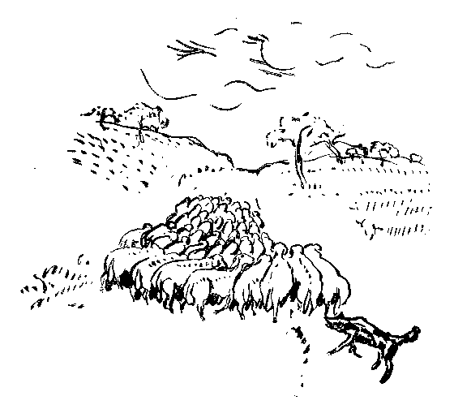
［＃改ページ］
その
臭いが、彼より先ににおって来る。彼の姿はまだ見えないのに、臭いはとっくに来ている。
彼は一団の先頭に立って進み、そのあとから
牝山羊の群れが、ごちゃごちゃひと塊りになって、雲のような
埃の中をついて来る。
彼の毛は長く、ぱさぱさしていて、それを背中の所できちんと分けている。
彼は自分の
頤鬚よりも、むしろその堂々たる体格の方を自慢にしている。というのが、牝山羊も頤の下にちゃんと鬚を生やしているからである。
彼が通ると、
或る連中は鼻をつまむ。或る連中は
却ってその
風情を愛する
彼は右も左も見ない。
尖った耳と短い
尻尾で、まっしぐらに進んで行く。人間どもが彼に罪をなすりつけたところで、それは彼の知ったことではない。彼はしかつめらしい顔をして、
数珠つなぎの
糞を落して行くのである。
アレクサンドルというのが彼の名前であり、その名は犬の仲間にまで響き渡っている。
一日が終って、太陽が隠れてしまうと、彼は刈り入れの男たちと一緒に村へ帰って来る。そして彼の角は、寄る年波に
撓みながら、次第に
鎌のように反りかえって来る。
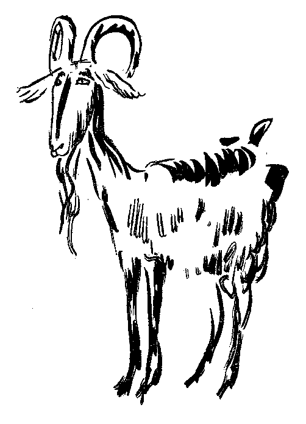
［＃改ページ］
半分に切った
酒樽の中で、ルノワアルとルグリは、毛皮で温かく足をくるんだまま、
牝牛のように食う。彼らはたった一度食事をするだけだが、その食事が一日じゅう続くのである。
新しい草をついやらずにいると、彼らは古いやつを根元まで
齧り、それから根さえも
噛みちぎる。
ところが、ちょうどいま、一株のサラダ菜が彼らの眼の前へ落ちて来た。ルノワアルとルグリは、一緒に、早速食い始める。
鼻と鼻を突き合せ、一生懸命食いながら、頭を振りふり、耳に駆け足をさせる。
とうとう葉が一枚だけになってしまうと、彼らはめいめいその一方の端を
銜えて、競争で食い始める。
彼らは、笑ってこそいないが、どうやらふざけ合っているように見え、葉っぱをすっかり食ってしまうと、兄弟の
愛撫で
脣をよせ合うように見えるかもしれない。
しかし、ルグリは急に気分が悪くなって来る。昨日からむやみに腹が張って、胃袋がへんにだぶついている。で、全くのところ、食い過ぎていた。サラダ菜の一枚ぐらいは、別に腹が減ってなくても食えるものだが、彼はもうなんとしても食えない。彼はその葉を放すと、いきなり自分の
糞の上に寝転がって、小刻みに
痙攣しだす。
忽ち彼のからだは
硬ばり、脚を左右に
拡げ、ちょうど、銃砲店の広告絵みたいになる。――「生かさぬ一発、狂わぬ一発」
いっとき、ルノワアルはびっくりして、口を休める。
燭台のような形に
坐り、柔らかく息をしながら、しっかり
脣を閉じ、眼の縁を
薔薇色にして、彼はじっと眼を据える。
彼の様子は、ちょうど魔法使が神秘の世界へ足を踏み込むようだ。
まっすぐに立った二つの耳が臨終を告げ知らす。
やがて、その耳が垂れる。
と、彼はそのサラダの葉をゆっくり平らげる。
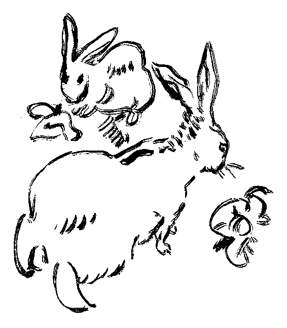
［＃改ページ］
ランプの光で、書きものの今日のページを
綴っていると、
微かな物音が聞えてくる。書く手を休めると、物音もやむ。紙をごそごそやり始めると、また聞えて来る。
鼠が一匹、眼を覚ましているのである。
女中が
布巾やブラシを入れて置く暗い穴の縁を、行ったり来たりしているのがわかる。
やがて
床へ飛び降り、台所の敷石の上を駆け回る。それから
竈のそばへ移り、流しの下へ移り、皿の中へ紛れ込む。で、次々に、だんだん遠くへ偵察を進めながら、次第に私の方へ近づいて来る。
私がペンを置くと、その度にその静けさが彼を不安にする。私がペンを動かし始めると、多分どこかにもう一匹鼠がいるのだろうと思って、彼は安心する。
やがて、彼の姿は見えなくなる。テーブルの下にはいって、私の足の間にいるのである。彼は
椅子の脚から脚へ駆け回る。私の木靴をすれすれに
掠め、その木のところをちょっと
齧ってみ、あるいは大胆不敵にも、とうとうその上に登る。
そうなると、私は足を動かすこともできなければ、あんまり大きな息もできない。それこそ、彼は逃げてしまうだろう。
しかし、私は書くのをやめるわけにいかぬ。で、彼に見
棄てられて、いつもの独りぽっちの退屈に落ち込むのが怖さに、私は句読点をつけてみたり、ほんのちょっと線を引いてみたり、少しずつ、ちびちびと、ちょうど彼がものを齧るのとおんなじ調子で書いて行く。
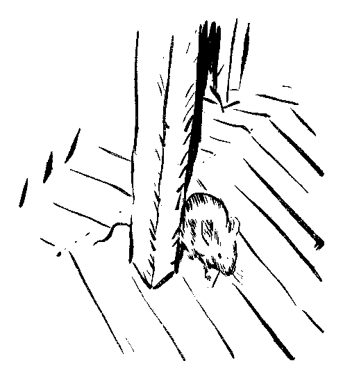
［＃改ページ］
貧乏な、しかし、さっぱりした品のいい鼬先生。ひょこひょこと、道の上を
往ったり来たり、溝から溝へ、また穴から穴へ、時間ぎめの出張教授。
［＃改ページ］
Le L

zard
私がもたれている石垣の割れ目からひとりでに生れて来た子供のように、彼は私の肩に
匍い上がって来る。私が石垣の続きだと思っているらしい。なるほど、私はじっとしている。それに、石と同じ色の
外套を着ているからである。それにしても、ちょっと私は得意である。
塀――「なんだろう、背中がぞくぞくするのは……」
蜥蜴――「俺だい」
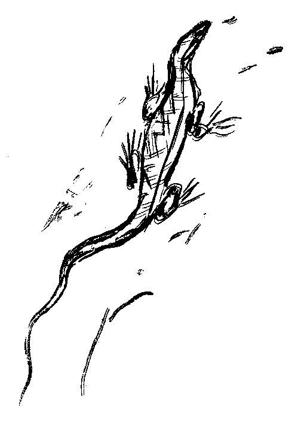
［＃改ページ］
こいつはまた精いっぱい伸びをして、長々と寝そべっている――上出来の
卵饂飩のように。
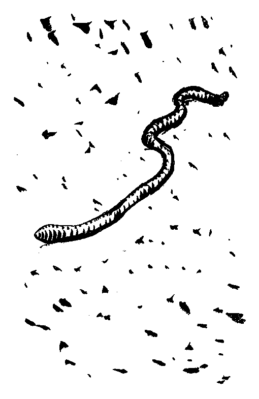
［＃改ページ］
長すぎる。
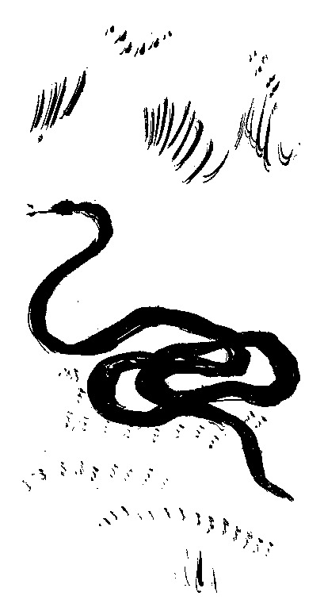
［＃改ページ］
いったい誰の腹から転がり出たのだ、この腹痛は？
［＃改ページ］
風邪の季節には出嫌いで、例の
麒麟のような
頸をひっこめたまま、蝸牛は、つまった鼻のようにぐつぐつ煮えている。
いい天気になると、精いっぱい歩き回る。それでも、舌で歩くだけのことだ。
私の小さな仲間のアベルは、よく蝸牛と遊んでいた。
彼はそいつを箱にいっぱい飼っていて、おまけにそれがみんなちゃんと見分けがつくように、殻のところに鉛筆で番号がつけてある。
あんまり乾いた日には、蝸牛は箱の中で眠っている。雨が降りそうになって来ると、アベルは早速彼らを外に出して整列させる。で、すぐに雨が降らなければ、上から水をいっぱいひっかけて眼を覚まさせる。すると、箱の底で
巣籠りをしている母親の蝸牛――と、そう彼は言うのだが、その蝸牛のほかは、みんなバルバアルという犬に護衛されて、ぞろぞろ歩き出す。バルバアルというのは鉛の板でできていて、それをアベルが指の先で押して行くのである。
そこで、私は彼と一緒に、蝸牛を仕込むのはなかなか骨が折れるということを
頻りに話し合いながら、ふと気がつくと、彼は「うん」と返事をする時でも、「いいや」という身振りをしている。
「おい、アベル」と私は言った――「どうしてそんなに首を動かすんだい、右へやったり、左へやったり？」
「砂糖があるんだよ」
「なんだい、砂糖って？」
「そら、ここんとこさ」
で、彼が四つん
這いになって、第八号が仲間にはぐれそうになっているのを引き戻している最中、その
頸に、肌とシャツの間に角砂糖が一つ、ちょうどメダルのように、糸で
吊してあるのが眼についた。
「ママがこんなものを結えつけたんだ」と彼は言う。「言うことをきかないと、いつでもこうするんだよ」
「気持が悪いだろう？」
「ごそごそすらあ」
「ひりひりもするだろう、え！ 真っ赤になってるぜ」
「その代り、ママが勘弁してやるって言ったら、こいつが食えらあ」とアベルは言った。
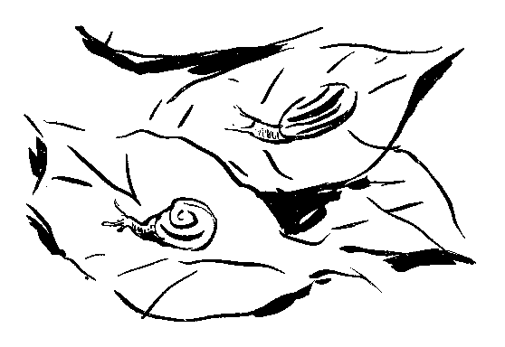
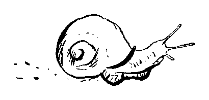
［＃改ページ］
ぱっと留め金が外れたように、彼女らはその
弾機をはずませる。
彼女らは、煮立ったフライ油のねっとりとした
雫のように、草のなかから跳ね上がる。
彼女らは、
睡蓮の広い葉の上に、青銅の文鎮のようにかしこまっている。
一匹のやつは、
喉をいっぱいに開けて空気を飲み込んでいる。その口から、腹の貯金箱の中へ、一銭入れてやれそうだ。
彼女らは、水底の泥のなかから、
溜息のように上って来る。
じっとしていると、水面に
覗いている大きな眼のようでもあり、どんより
澱んだ沼の
腫物のようでもある。
茫然として、石切り職人のように
坐りこんだまま、彼女らは夕日に向って
欠伸をする。
それから、うるさく
喚きたてる露天商人のように、その日の耳新しい出来事を声高に話す。
今晩、彼女らのところでは、お客をするらしい。君には聞えるか、彼女らがコップを洗ってる音が？
時おり、彼女らはぱっと虫を
銜える。
また
或る連中は、ただ恋愛だけに没頭している。
どれもこれも、それらは、釣り好きの男を誘惑する。
私はその辺の枝を折って、なんなく
釣竿をこしらえる。
外套にピンが一本さしてある。それを曲げて釣針にする。
釣糸にも困りはしない。
しかし、それだけは
揃っても、まだ毛糸の
屑か何か、なんでもいい、赤い物の切れっぱしを手に入れなければならぬ。
私は自分のからだを捜し、地面を捜し、空を捜す。
とうとうなんにも見つからず、私はつくづく自分の上着の
釦孔を眺める。ちゃんと口をあいて、すっかり用意のできているその釦孔は、別に不平をいうわけではないが、そうすぐには例の赤リボン（
注 レジョン・ドヌール勲章の略章）で飾ってもらえそうにもない。
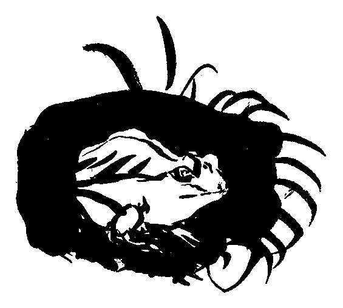
［＃改ページ］
石から生れた彼は、石の下に
棲み、そして石の下に墓穴を掘るだろう。
私はしばしばこの先生を訪ねる。で、その石を上げるたんびに、そこにもういなければいいがと思い、また、いてくれればいいがとも思う。
彼はそこにいる。
このよく乾いた、清潔な、狭苦しい自分だけの
住居に隠れ、彼は
家いっぱいに場所を取り、
吝嗇坊の
巾着みたいに膨れている。
雨が降って
匐い出した時には、ちゃんと私を迎えにやって来る。二、三度、大儀そうにとんで、
太股を地につけて止り、赤い眼を私に向ける。
世間のわからず屋が、彼を
癩病やみのように扱うなら、私は平気で先生のそばへしゃがみ、その顔へ、この人間の顔を近寄せてやる。
それから、いくらかの気味悪さを押し隠して、お前を手でさすってやるよ、蟇君！
人間は、この世の中で、もっと
胸糞の悪くなるようなものを、いくらも
呑み込んでいるんだ。
それはそうと、昨日、私はすっかりしくじってしまった。というのは、先方のからだを見ると、
疣がみんな
潰れて、
醗酵したようにぬらぬらしていた。そこで、私は――
「なあ、おい、蟇君……。こんなことを言って、君に悲しい思いをさせたかないんだが、しかし、どう見ても、君は不細工だね」
こう言うと、彼は、例のあどけない、しかも歯の抜けた口をあけ、熱い息を吐きながら、心もち英語式のアクセントで――
「じゃ、君はどうだい？」
と、やり返した。
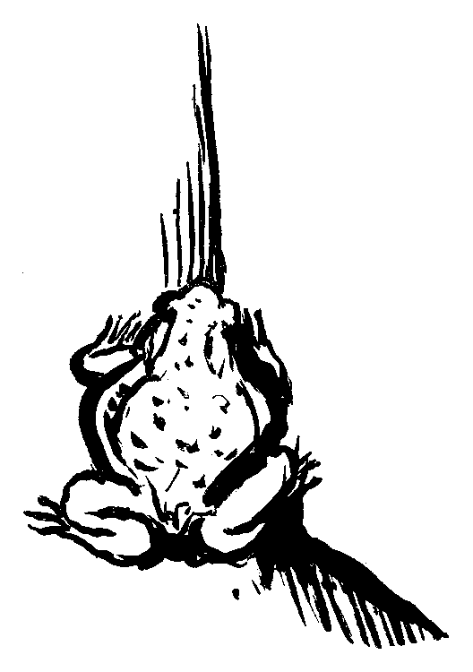
［＃改ページ］
L'Araign
e
髪の毛をつかんで硬直している、真っ黒な毛むくじゃらの小さい手。
一晩じゅう、月の名によって、彼女は封印を
貼りつけている。
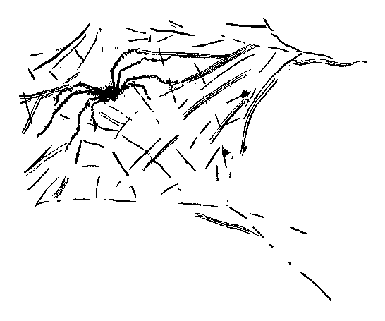
［＃改ページ］
彼女は、暑い間かくまってもらっていた草の茂みから
這い出して来る。まず、大きな起伏の続いている砂道を横切って行く。用心して、途中で止らないようにしながら、植木屋の木靴の足跡のなかでは、いっとき道に迷ったのではないかと心配する。
苺の所まで
辿りつくと、ちょっとひと休みして、鼻を左右に突き出しながら
嗅いでみる。それからまた動きだすと、葉の下を
潜ったり、葉の上へ出たり、今度はもうちゃんと行先を心得ている。
全く見事な毛虫である。でっぷりとして、毛深くて、立派な毛皮にくるまって、
栗色のからだには金色の
斑点があり、その眼は黒々としている。
嗅覚を頼りに、彼女は濃い
眉毛のように、ぴくぴく動いたり、ぎゅっと縮んだりする。
彼女は一本の
薔薇の木の下で止る。
例の細かいホックの先で、その幹のごつごつした肌をさわってみ、生れたばかりの
仔犬のような小さな頭を振りたてながら、やがて決心して
攀じ登り始める。
で、今度は、彼女の様子は、道の長さをくぎりくぎり
喉へ押し込むようにして、苦しげに
嚥み込んでいくとでも言おうか。
薔薇の木のてっぺんには、
無垢の乙女の色をした薔薇の花が咲いている。その花が惜し気もなく
撒き散らす芳香に、彼女は酔ってしまう。花は決して人を警戒しない。どんな毛虫でも、来さえすれば黙ってその茎を登らせる。贈物のようにそれを受ける。そして、今夜は寒そうだと思いながら、機嫌よく毛皮の襟巻を
頸に巻きつけるのである。
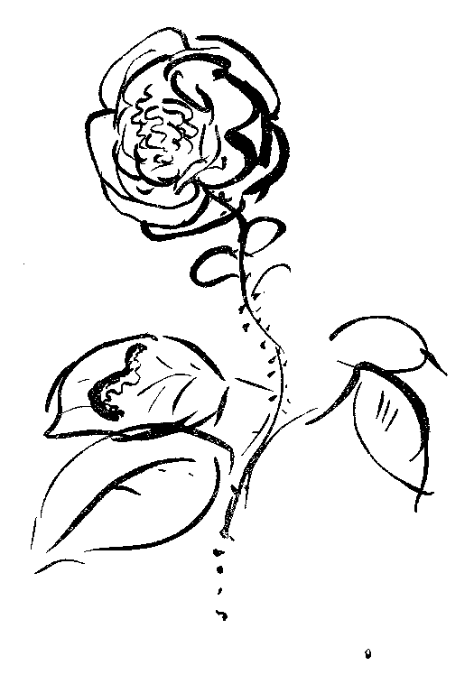
［＃改ページ］
二つ折りの恋文が、花の番地を捜している。
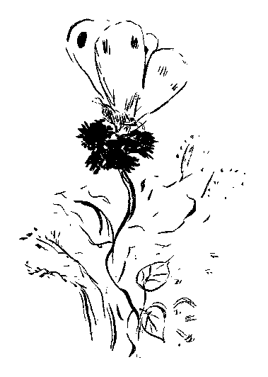
［＃改ページ］
La Gu

pe
いくらなんでも、それでは自慢の腰つきが台なしになる。
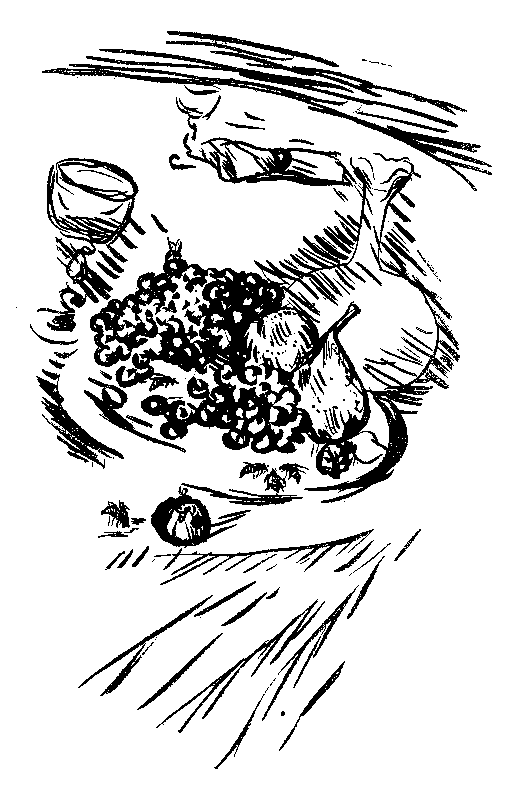
［＃改ページ］
彼女は眼病の養生をしている。
川べりを、あっちの岸へ行ったり、こっちの岸へ来たり、そして
腫れ上がった眼を水で冷やしてばかりいる。
じいじい音を立てて、まるで電気仕掛けで飛んでいるようだ。
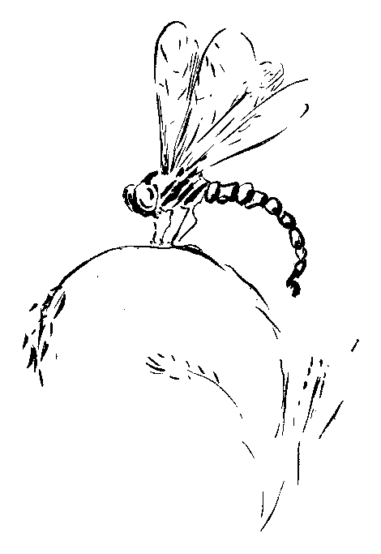
［＃改ページ］
この時刻になると、歩きくたびれて、黒んぼの虫は散歩から帰って来、自分の屋敷の取散らかされている所を念入りに片付ける。
彼はまず狭い砂の道を
綺麗にならす。
鋸屑をこしらえて、それを隠れ
家の入口のところに
撒く。
どうも邪魔になるそこの大きな草の根を
鑢で削る。
ひと息つく。
それから、例のちっぽけな懐中時計を出して、ねじを巻く。
すっかり片付いたのか、それとも時計が
毀れたのか、彼はまたしばらくじっと休んでいる。
彼は家の中へ入って戸を閉める。
永い間、手のこんだ錠前へ
鍵を突っこんでみる。
それから、耳を澄ます――
外には、なんの気配もない。
しかし、彼はまだ安心できないらしい。
で、滑車の
軋む鎖で、地の底へ降りる。
あとはなんにも聞えない。
静まり返った野原には、ポプラの並木が指のように空に
聳えて、じっと月の方を指さしている。
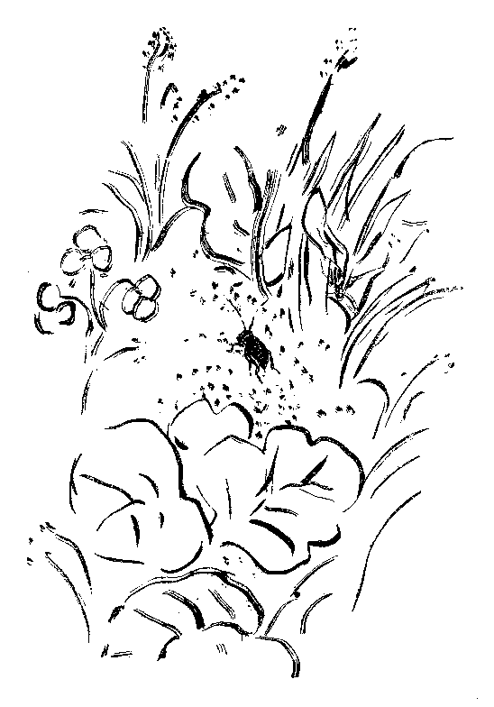
［＃改ページ］
こいつは虫の世界の憲兵というところか？
一日じゅう跳び回っては、影なき密猟者の捜索に躍起になっているが、それがどうしてもつかまらない。
どんなに高く伸びた草も、彼の行手を遮ることはできない。
彼は何ものも恐れない。彼には七里ひと跳びの長靴があり、
牡牛のような
頸、天才的な額、船の竜骨のような腹があり、セルロイドの
翅と悪鬼のような角があり、そして後ろには大きな軍刀を
吊している。
憲兵として立派な働きをするような人間には、必ずまたいろんな悪癖があるものだが、打明けたところ、ばったは
噛み
煙草をやるのである。
嘘だと思うなら、指で追いかけてみたまえ。彼を相手に鬼ごっこをやり、そして跳ねる
隙を
狙って、うまく
苜蓿の葉の上でつかまえたら、その口をよく見てみたまえ。恐ろしい格好をした
吻の先から、煙草の噛み汁のような黒い泡を
滲ませる。
しかし、そう言っている間に、もう彼をつかまえていられなくなる。彼はまた死にもの狂いになって跳ね出そうとする。緑色の怪物は、急に激しく身をもがいて君の手をすり抜け、
脆い、取外し自在のからだが、
可憐な
腿を一本、君の手の中に残して行く。
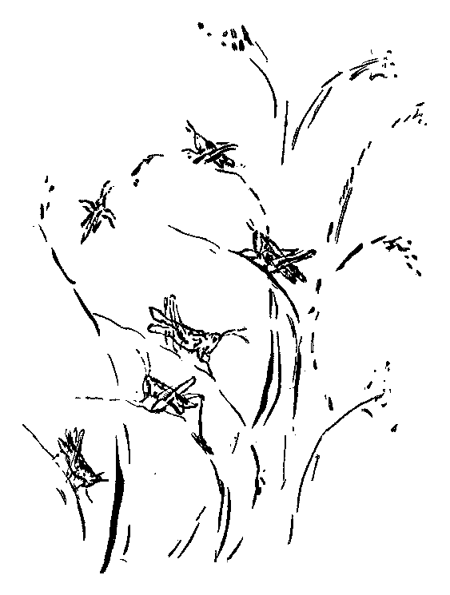
［＃改ページ］
いったい、何事があるんだろう？ もう夜の九時、それにあそこの
家では、まだ明りがついている。
［＃改ページ］
一匹一匹が、３という数字に似ている。
それも、いること、いること！
どれくらいかというと、333333333333……ああ、きりがない。
一匹の蟻が、雨上がりの
轍のなかに落ち込んで、
溺れかけていた。その時、ちょうど水を飲んでいた一羽の鷓鴣の子が、それを
嘴で挟んで、命を助けてやった。
「この御恩はきっと返します」と、蟻が言った。
「僕たちはもうラ・フォンテエヌの時代に住んでるんじゃないからね」と、懐疑主義者の鷓鴣の子が言う。「
勿論、君が恩知らずだって言うんじゃないよ。だけど、僕を撃ち殺そうとしてる猟師の
踵に、いったいどうして食いつくつもりだい。今時の猟師は、
跣足じゃ歩かないぜ」
蟻は、余計な議論はせず、そのまま急いで自分の仲間に追いついた。仲間は、一列に並べた黒い真珠のように、同じ道をぞろぞろ歩いていた。
ところが、猟師は遠くにいなかった。
彼は、ちょうど、一本の木の
蔭に、横向きになって寝ていた。すると、
件の鷓鴣の子が、
蓮華畑を横切りながら、ちょこちょこ、
餌を拾っているのが眼についた。彼は立ち上がって、撃とうとした。ところが、右の腕が
痺れて、「蟻が
這っているように」むずむずする。鉄砲を構えることができない。腕はまたぐったり垂れ、そして鷓鴣の子はその痺れがなおるまで待っていない。
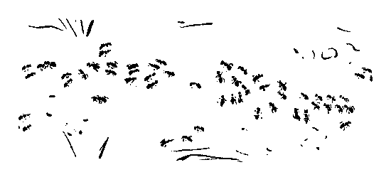
［＃改ページ］
弾機仕掛けの
煙草の粉。
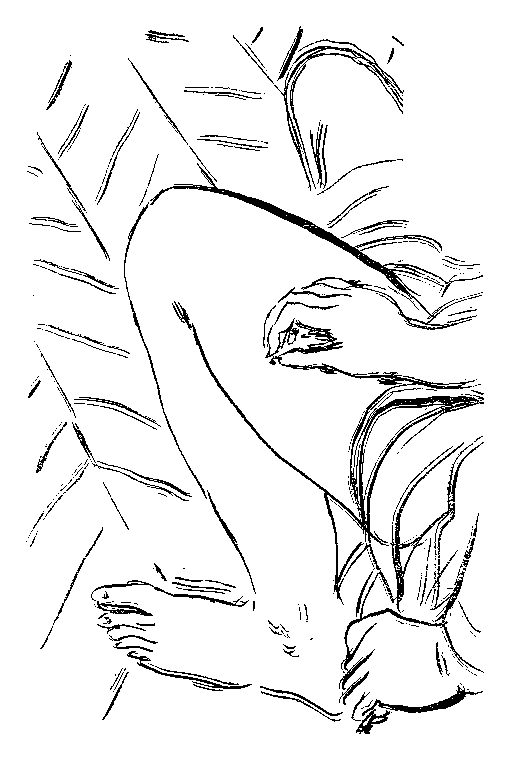
［＃改ページ］
L'

cureuil
羽飾りだ！ 羽飾りだ！ さよう、それに違いない。だがね、君、そいつはそんなとこへ着けるもんじゃないよ。
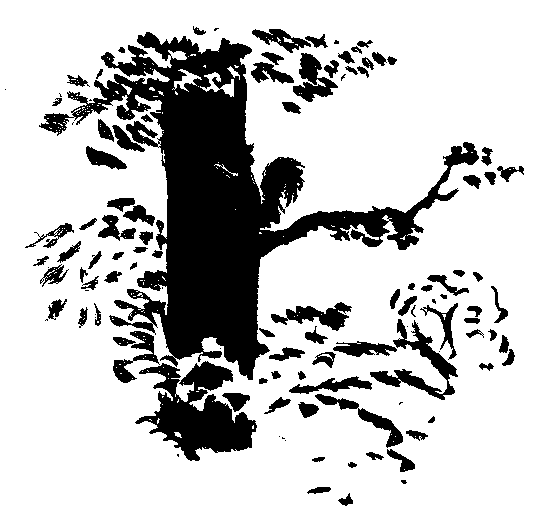
［＃改ページ］
鍵穴のように、黒く、ぺしゃんこだ。
［＃改ページ］
猿を見に行ってやりたまえ。（しようのない腕白どもだ。ズボンの
股をすっかり破いてしまっている）。どこへでも
攀じ登り、新鮮な日光の下で踊り、むかっ腹を立て、からだじゅうを
掻き、なんでも
摘みあげ、そしていかにも原始的な
風情で水を飲む。その間、彼らの眼は、時々かき曇ることはあっても、それも永くは続かず、きらりと光ってはまたすぐ鈍く
澱んでしまう。
紅鶴を見に行ってやりたまえ。
薔薇色の下着の
裾が泉水の水に
濡れるのを心配して、ピンセットの上に乗って歩いている。白鳥と、その様子ぶった鉛の
頸。
駝鳥。
雛鶏の
翼、役目重大な駅長のような帽子。ひっきりなしに肩を
聳やかしている
鸛（しまいに、その
科はなんの意味もないことがわかる）。みすぼらしいモーニングを着た、寒がりのアフリカ
鶴。
袖なし
外套を着込んだペンギン鳥。
嘴を木刀のように構えているペリカン。それから、
鸚鵡。その一番よく仕込まれたやつでも、現在彼らの番人には遠く及ばない。番人は、なんとかして、結局私たちの手から十スー銀貨を一枚まきあげてしまう。
重たげに有史以前の思想で目方のついている
犁牛を見に行ってやりたまえ。
麒麟は
鉄柵の横木の上から、
槍の先につけたような頭を
覗かせている。象は猫背を作り、鼻の先を低くたれて、戸口の前を舞踏靴を引きずりながら歩いている。彼のからだは、乗馬ズボンをあんまり上へ引張り上げたような袋の中におおかた隠れ、そして後ろの方には、ちょっぴり
紐の先が垂れている。
ペン軸を身につけた
豪猪もついでに見に行ってやりたまえ。そのペン軸は、彼にとっても、彼の女友達にとっても、甚だ邪魔っけなしろものだ。
縞馬、これはほかのすべての縞馬の透し絵の標本だ。寝台の足もとにべったりと降りた
豹。私たちを楽しませ、自分は一向楽しまない
熊。自分でも
欠伸をし、人にも欠伸を催させるライオン。
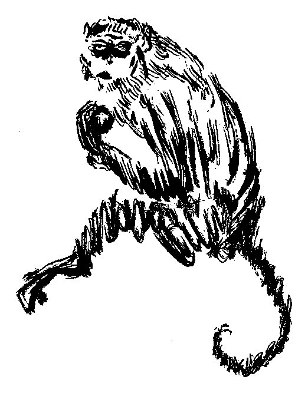
［＃改ページ］
私がその
小径から林の中へ足を踏み入れた時、ちょうどその小径の向うの口から、彼がやって来た。
私は、最初、誰か見知らぬ人間が、頭の上に植木でも載っけてやって来るのかと思った。
やがて、枝が横に張って、ちっとも葉のついてない、いじけた小さな
樹が見えて来た。
とうとう、はっきり鹿の姿が現われ、そこで私たちはどちらも立ち止った。
私は彼に言った――
「こっちへ来たまえ。なにも怖がることはないんだ。鉄砲なんか持ってたって、こいつは体裁だけだ。いっぱし、腕に覚えのある人間の
真似をしているだけさ。こんなものは使やしない。
薬莢は引出しの中へ入れたままだ」
鹿はじっと耳をかしげて、
胡散臭そうに私の言葉を聴いていた。私が口を
噤むと、彼はもう
躊躇しなかった。一陣の風に、樹々の
梢が互いに交差してはまた離れるように、彼の脚は動いた。彼は逃げ去った。
「実に残念だよ！」と、私は彼に向って叫んだ。「僕はもう、二人で一緒に道を歩いて行くところを空想していたんだぜ。僕の方は、君の好きな草を、自分で手ずから君に食わせてやる。すると、君は、散歩でもするような足どりで、僕の鉄砲をその角の枝に掛けたまま運んで行ってくれるんだ」
 ［＃改ページ］
［＃改ページ］
彼は速い水の流れを
溯って、小石伝いの道をやって来る。というのが、彼は泥も水草も好きではない。
彼は、河底の砂の上に
壜が一本転がっているのを見つける。中には水がいっぱい入っているだけだ。私はわざと
餌を入れておかなかったのである。かわ沙魚はそのまわりを回って、
頻りに入口を捜していたと思うと、早速そいつにかかってしまう。
私は壜を引上げて、かわ沙魚を放してやる。
川を上ると、今度は物音が聞えて来る。彼は逃げ出すどころか、物好きにも、そのそばへ寄って行く。それは、私が面白半分に水の中を踏みまくりながら、網を張ったそばで、水底を
竿で
掻き回しているのである。かわ沙魚は強情だ。網の目を突き抜けようとする。で、ひっかかる。
私は網をあげて、かわ沙魚を放してやる。
その
下流の方で、急にぐいぐい私の釣糸を引張るやつがあり、二色に塗った
浮子が水を切って走る。
引上げてみると、またしても彼である。
私は彼を釣針からはずして、放してやる。
今度こそ、もうひっかかりはすまい。
彼はすぐそこに、私の足元の澄んだ水の中でじっとしている。その横っ広い頭や、
頓馬な大きな眼や、二本の
髯がよく見える。
彼は裂けた
脣で
欠伸をし、今しがたの激しい興奮で、まだ息を弾ませている。
それでも、彼はいっこう性
懲りがない。
私はさっきの
蚯蚓をつけたまま、また釣糸を下ろす。
すると、早速、かわ沙魚は食いつく。
いったい、私たちはどちらが先に根負けするのだろう。
さては、いよいよ、かからないな。おおかた、今日が漁の解禁日だということを御存じないと見える。
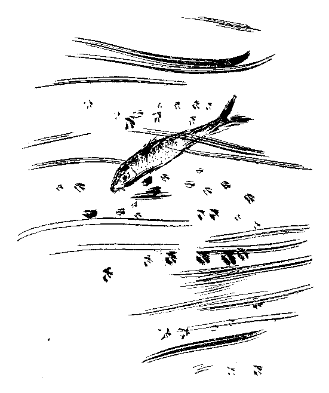
［＃改ページ］
コルセットを作るだけの材料は、ちゃんと口の中に持っている。が、なにしろ、この胴まわりじゃ……！
［＃改ページ］
鍬――サクサクサク……稼ぐに追いつく貧乏なし。
鶴嘴――同感！
■
花――今日は日が照るかしら。
向日葵――ええ、あたしさえその気になれば。
如露――そうは行くめえ。おいらの
料簡ひとつで、雨が降るんだ。おまけに、
蓮果でも外してみろ。それこそ土砂降りさ。
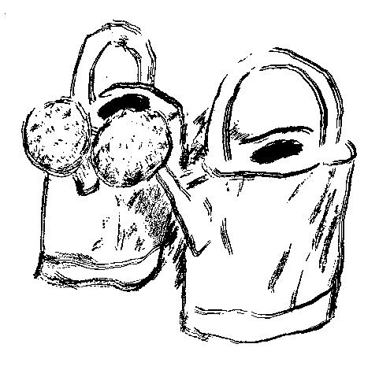
■
薔薇――まあ、なんてひどい風……！
添え木――わしが付いている。
■
木莓――なぜ薔薇には
棘があるんだろう。薔薇の花なんて、食べられやしないわ。
生簀の
鯉――うまいことを言うぞ。だから、俺も、人が食やがったら骨を立ててやるんだ。
薊――そうねえ、だけど、それじゃもう遅すぎるわ。
■
薔薇の花――あんた、あたしを
綺麗だと思って……？
黄蜂――下の方を見せなくっちゃ……。
薔薇の花――おはいりよ。
■
蜜蜂――さ、元気を出そう。みんな、あたしがよく働くって言ってくれるわ。今月の末には、売場の取締になれるといいけれど……。
■
菫――おや、あたしたちはみんな
橄欖章を
貰ってるのね。
白い菫――だからさ、なおさら、控え目にしなくっちゃならないのよ、あんたたちは。
葱――あたしをごらん。あたしが威張ったりして？
■
菠薐草――
酸模っていうのは、あたしのことよ。
酸模――うそよ、あたしが酸模よ。
■
分葱――くせえなあ！
大蒜――きっと、また
石竹のやつだ。
■
アスパラガス――あたしの小指に
訊けば、なんでもわかるわ。
■
馬鈴薯――わしゃ、子供が生れたようだ。
■
林檎の木（向い側の
梨の木に）――お前さんの梨さ、その梨、その梨、……お前さんのその梨だよ、あたしがこさえたいのは。
［＃改ページ］
彼らは麦の中で、小さな兵士の一隊のように、ぱっと目立っている。しかしもっとずっと
綺麗な赤い色をしていて、おまけに、物騒でない。
彼らの剣は穂である。
風が吹くと、彼らは飛んで行く。そして、めいめい、気が向けば、
畝のへりで、同郷出身の女、矢車草とつい話が長くなる。
［＃改ページ］
どの株も、添え木を
杖に、武器携帯者。
いったい、何を待っているのだ。葡萄の実は、今年はまだなかなか
生るまい。そして葡萄の葉は、もう裸体にしか使われない。
［＃改ページ］
庭の桜の
叉になった枝の上に、鶸の巣があった。見るからに
綺麗な、まん丸によく出来た巣で、外側は一面に毛で固め、内側はまんべんなく
生毛で包んである。その中で、
雛が四羽、卵から
孵った。私は父にこう言った――
「あれを捕って来て、自分で育てたいんだけれどなあ」
父は、これまで度々、鳥を
籠に入れて置くことは罪悪だと説いたことがある。が、今度は、多分同じことを繰返すのがうるさかったのだろう、別になんとも返事をしなかった。数日後、私は彼に言った――
「しようと思や、わけないよ。初め、巣を籠の中に入れて置くの。その籠を桜の木に
括りつけて置くだろう。そうすると、親鳥が籠の目から
餌をやるよ。そのうちに親鳥の必要がなくなるから」
父は、この方法について、自分の考えを述べようとしなかった。
そういうわけで、私は籠の中に巣を入れて、それを桜の木に取りつけた。私の想像は外れなかった。年を取った鶸は、青虫を
嘴に一杯くわえて来ては、悪びれる様子もなく、雛に食わせた。すると、父は、遠くの方から、私と同じように面白がって、彼らのはなやかな行き来、血のように赤い、また硫黄のように黄色い色の飛び交うさまを眺めていた。
ある日の夕方、私は言った――
「雛はもうかなりしっかりして来たよ。放しといたら飛んで行ってしまうぜ。親子
揃って過すのは今夜っきりだ。明日は、家の中へ持って来よう。僕の窓へつるしとくよ。世の中に、これ以上大事にされる鶸はきっとないから、お父さん、そう思っていておくれ」
父は、この言葉に逆らおうとしなかった。
翌日になって、私は籠が空になっているのを発見した。父もそこにいて、私のびっくりした様子をちゃんと見ていた。
「もの好きで言うんじゃないが」と、私は言った。「どこの
馬鹿野郎が、この籠の戸をあけたのか、そいつが知りたいもんだ」
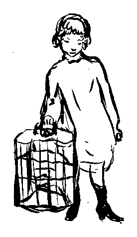
［＃改ページ］
フェリックスは、人が鳥を籠のなかなんかに閉じこめておく気持がわからないと言う。
「誰でも言うじゃないか、花を折り取るのは罪悪だって」と、彼は言う。「とにかく、僕などは、茎についたままでなきゃ、花を眺めたいとは思わないね。だから、それとおんなじさ。鳥ってやつは飛ぶように出来てるんだ」
そんなことを言いながら、彼は鳥籠を一つ買う。それを自分の窓に掛けておく。籠の中には、毛綿で作った巣と、草の実を入れた皿と、
綺麗な水をしょっちゅう取換えてあるコップとが置いてある。おまけに、ぶらんこや小さな鏡まで取りつけてある。
で、人が驚き顔で
訊ねると――
「僕はこの鳥籠を見るたんびに、自分の寛大さを
嬉しく思うのさ」と、彼は言う。「この籠には鳥を一羽入れたっていいわけだ。それをこうして空っぽにしとく。万一、僕がその気になったら、たとえば茶色の
鶫とか、ぴょいぴょい跳び回るおめかし屋の
鷽とか、そのほかフランス中にいろいろいる鳥のどれかが、
奴隷の境遇に落ち込んでしまうんだ。ところが、僕のお
蔭で、そのうちの少なくとも一羽だけは自由の身でいられるんだ。つまり、そういうことになるんだ」
［＃改ページ］
私はどういう気で、わざわざこんな鳥を買って来たのだろう？
小鳥屋は私に言った――「これは雄です。なに、一週間もすりゃ
馴れます。そうすりゃ鳴きだしますよ」
ところが、小鳥はいつまでも強情に黙りこんでいる。それに、やることが何から何まであべこべだ。
餌壺に
餌を入れてやると、いきなり
嘴の先でとびかかって、あたり一面に
撒き散らしてしまう。
ビスケットを
籠の横木の間に糸で結びつけてやる。すると、彼が食うのはその糸だけだ。彼はまるで
金鎚のような勢いで、そのビスケットを押したり突っついたりする。で、ビスケットは落ちてしまう。
綺麗な飲み水のなかでは水浴びをし、水浴びをする器で水を飲む。そして、その時の都合に任せて、その両方のどちらにでも
糞をたれる。
煉り餌をやると、自分たち同類の鳥が巣を作る、至極あつらえ向きの
捏土だと思いこんで、ただ本能的にその上に
蹲る。
彼はまだサラダ菜の効能を知らない。で、面白がって引裂くだけだ。
彼が、ほんとにその気で、餌をつついて
呑み込もうとする時は、全く気の毒になる。彼はそれを嘴の中であっちこっち転がし回り、押しつけてみたり、
潰してみたり、まるで歯抜け
爺さんみたいに、
頻りに首をひねっている。
棒砂糖の切れっぱしを入れてあるのに、どうしようともしない。こりゃなんだ。石がとび出したのか？ それとも、露台か、テーブルか、どっちみち、実用には遠い。
彼はそれよりも
木片の方が好きだ。木片は二本あって、上下に交り合っている。彼がぴょんぴょん跳んでいるのを見ると、私は胸が悪くなる。その様子は、さながら、時間もなにも分らない振子時計の機械的な無駄骨折りにひとしいものである。何が面白くあんな跳び方をし、なんの欲求に駆られて跳ね回るのだろう？
その
陰鬱な体操が済んで休む時でも、片脚で一方の止り木をしっかり握り締めて止りながら、もう一つの脚で、機械的に、その同じ止り木を捜している。
冬になって、ストーブを
焚き始めると、彼は早速もう春の脱毛の時期が来たのだと思って、羽を
毟りだす。
私のランプの輝きは、彼の夜を
掻き乱し、その睡眠の時刻を混乱させる。彼は日の暮れ方に眠りにつく。私は、彼のまわりに
闇が次第に濃くなって行くのを、じっとそのままにしておく。おそらく、彼は夢でも見ているのだろう。突然、私はランプを籠に近づける。彼はぱっと眼をあける。なんだ、もう夜が明けたのか！ で、早速、彼はまた動き回り始め、跳ねたり、葉っぱを突っつき回したりしながら、
尻尾を扇型に拡げ、
翼を伸ばす。
ところが、私はランプを吹き消してしまう。で、残念ながら、彼のうろたえた顔つきは見えない。
やがて、私は、しょっちゅうあべこべなことばかりやって暮してるこの
唖の鳥に、すっかり愛想を尽かしてしまって、窓から外へ放してやる……。が、彼は籠の中の自由以外にもはや自由の使い方を知らないのである。今に、誰かが手でつかまえてしまうだろう。
そいつを私の所へ届けてくれるのはやめたほうがいい。
私は、なんにもお礼なんか出さないばかりではない。私はそんな鳥は一向
識らぬと言いきってやる。
［＃改ページ］
彼女らは私に課業を授けてくれる。
まず、その小刻みな
啼き声で、空中に点線を描く。
一本の直線を引き、その最後にコンマを打ったと思うと、そこで急に行を変える。
途方もなく大きな括弧を描いて、私の住んでいる家をその中に入れてしまう。
庭の泉水もその飛ぶ姿を写しとることができないほど、素早く、それこそ穴倉から屋根裏へまっすぐに飛び上がって行く。
翼の羽根ペンも軽やかに、彼女らはぐるぐると誰にも
真似のできない
花押を書きなぐる。
それから、今度は二羽ずつ抱き合ったまま、みんな一緒に集まり、ごちゃごちゃに
塊って、空の青地の上へ、べったりインクの
汚点をつける。
しかし、ただ一人の友達の眼だけが、彼女らの姿を残りなく
捉えることができる。そして、諸君がギリシャ語やラテン語を知っているというのなら、私のほうは、煙突の燕どもが空に書くヘブライ語を読み分けることができる。
かわら
鶸――「燕ってやつは
馬鹿だなあ。煙突を
樹だと思ってやがる」
蝙蝠――「いくら人がなんと言ったって、あいつとあたしじゃ、あいつのほうが飛ぶのはまずいよ。昼の日なか、しょっちゅう道を間違えてるんだもの。あたしみたいに、夜にでも飛んでごらん。ひっきりなしに死ぬような目に会うから」
 ［＃改ページ］
［＃改ページ］
毎日使っているうちに夜もだんだん
摺り切れて来る。
上の方の、星を
鏤めたあたりは摺り切れない。ちょうど、
裾を引く着物と同じように、砂利や木立の
隙間から、不健康なトンネルや、じめじめした穴倉の奥まで摺り切れる。
どんなところでも、夜の
帷の裾のはいり込まないところはない。そして
茨に引掛っては破れ、寒さに会っては裂け、泥によごれては
傷む。で、毎朝、夜の帷が引き上げられる度に、
襤褸っきれがちぎれ落ちて、あっちこっちに引掛る。
こうして、蝙蝠は生れて来る。
で、こういう素姓があるために、彼女らは昼の光には耐えられないのである。
太陽が沈んで、私たちが涼みに出る時分になると、彼女らは、
昏睡状態のまま一方の
爪の先でぶら下がっていた古い
梁から
剥がれ落ちて来る。
彼女らのぎごちない飛び方は私たちをひやひやさせる。鯨の骨のはいった毛のない翼で、私たちの周囲を跳ね踊る。彼女らは、役にも立たない傷ついた眼よりも、むしろ耳を頼りに飛ぶのである。
私の女友達は顔を隠す。私は私で、不潔なものにぶっつかられるのを恐れて、頭を
外らす。
人々の言うところによれば、彼女らは、我々人間の恋にも勝る熱情をもって私たちの血を吸い、ついに死に至らしめるという。
とんでもない話である！
彼女らはちっとも悪いことはしない。私たちのからだには決してさわらないのである。
夜の娘である彼女らは、ただ光を嫌うだけである。そして、そのちっぽけな葬式用の襟巻でそばを
掠めて飛びながら、
蝋燭の灯を捜し出してはそれを吹き消すのである。
［＃改ページ］
よく飛びもするが、よく走ることも走る。いつもわれわれの脚の間で、
馴れ馴れしくするかと思うと、なかなかつかまらない。小さな叫び声を立てながら、自分の
尻尾を踏めるなら踏んでみろと言わんばかりである。
［＃改ページ］
彼女の羽には、いつでも去年の雪が幾らか消え残っている。
彼女は両脚を
揃えて地べたの上を跳び回り、それから、例の一直線な機械的な飛び方で、一本の
樹を目がけて飛んで行く。
時々はその樹に止り損ね、隣の樹のところまで行って、やっとそこで止る。
俗っぽく、てんで見向きもされないために不死の鳥とも見え、朝から
燕尾服を着込んで夕方までしゃべり回り、例の「
尻尾つき」を着て全く我慢のならないこの鳥、これこそこのフランスの最もフランス的な鳥である。
鵲――「カカカカカカ……」
蛙――「何を言ってやがるんだ、あの
女は」
鵲――「歌をうたってるのよ」
蛙――「ゲエッ！」
土竜――「静かにしろ、やい、上のやつ。仕事をしているのが聞えやしねえ」
［＃改ページ］
私の庭に、ほとんど枯れかけた古い
胡桃の
樹があるが、小鳥どもは気味悪がって寄りつかない。たった一羽、黒い鳥がその最後の葉の中に住んでいる。
しかし、庭のそのほかの部分は、花の咲いた若い樹がいっぱいに植わっていて、陽気な、いきいきした、色とりどりの小鳥どもが巣を掛けている。
そして、これらの若い樹はその老いぼれの胡桃の樹を
馬鹿にしているらしい。
ひっきりなしに、彼に向って、まるで悪態をつくように、おしゃべりの小鳥の群れを投げつける。
雀、
岩燕、
山雀、かわら
鶸などが、入り交り、立ち交り、彼を悩ます。彼らはその翼で彼の枝の先をこづく。あたりの空気は、彼らのきれぎれの鳴き声で沸き返る。やがて、彼らは退散する。すると、また別の小うるさい一団が、若樹のなかから飛び立って来る。
彼らは、精の続く限り、挑みかけ、鳴き立て、金切声をあげ、
喉を
嗄らす。
そんな風にして、明けがたから日暮れ時まで、まるで悪態をつくように、かわら鶸、山雀、岩燕、雀などが、その老いぼれの胡桃の樹を目がけて、若樹のなかから飛び出して行く。
しかし、時々は胡桃の樹も
堪忍袋の緒をきらし、その最後の葉を揺すぶり、我が家の黒い鳥を放し、そしてこう言い返す――
「
くそつぐみ！」
樫鳥――「のべつ黒装束で、見苦しいやつだ、くろ鶫って！」
くろ鶫――「群長閣下、わたしはこれしか着るものがないのです」
［＃改ページ］
私はかつて雲雀というものを見たことがない。夜明けと同時に起きてみても無駄である。雲雀は地上の鳥ではないのだ。
今朝から、私は土くれや枯草を
頻りに踏み回っている。
灰色の
雀や、ペンキの色のなまなましい
鶸が群れをなして、
茨の生垣の上で波打っている。
樫鳥は公式の服装で木から木へ閲兵して回る。
一羽の
鶉が、
苜蓿畑をすれすれに
掠めながら、墨縄を張ったような直線を描いて飛んで行く。
女よりも上手に編物をやっている羊飼いの後ろには、羊どもがぞろぞろ従い、どれもこれも似通っている。
そして、何一ついい前触れをもってこない
鴉さえほほえましいほど、すべてが新鮮な光の中に浸る。
まあ、私とおんなじようにして、じっと耳を澄ましてみるがいい。
そら、聞えはせぬか――どこかはるかに高く、金の杯のなかで水晶のかけらを
搗き砕いているのが……。
雲雀がどこで
囀っているのか、それを誰が知ろう？
空を見つめていると、太陽が眼を
焦がす。
雲雀の姿を見ることはあきらめなければならない。
雲雀は天上に
棲んでいる。そして、天上の鳥のうち、この鳥だけが、我々のところまで届く声で歌うのである。
［＃改ページ］
私は彼に言う――
「さあ、返せ、その桜んぼを、いますぐに」
「返すよ」と、こま鶯は答える。
彼は桜んぼを返す。が、その桜んぼと一緒に、彼が一年間に
嚥み込む害虫の三万の幼虫も返してよこす。
［＃改ページ］
Le Martin-P
cheur
今日の夕方は、魚が一向かからなかった。が、その代り、私は近来
稀な興奮を獲物にして帰って来た。
私がじっと
釣竿を出していると、一羽の
翡翠が来てその上に止った。
これくらい派手な鳥はない。
それは、大きな青い花が長い茎の先に咲いているようだった。竿は重みでしなった。私は、翡翠に
樹と間違えられた、それが大いに得意で、息を殺した。
怖がって飛んで行ったのでないことは請合いである。一本の枝から別の枝に飛び移るつもりでいたに違いない。
［＃改ページ］
「
なんだ？
なんだ？
なんだ？」
「なんでもない」
［＃改ページ］
L'
pervier
彼はまず村の上で何度も円を描く。
さっきまでは、ほんの
蠅一匹、
煤一粒の大きさだった。
その姿が次第に大きくなるにつれて、描く円が狭まって来る。
時々、彼はじっと動かなくなる。庭の鳥どもは不安そうな様子を見せ始める。
鳩は小屋へはいる。一羽の
雌鶏はけたたましく鳴きながら、
雛鶏たちを呼び集める。用心堅固な
鵞鳥どもが、裏庭から裏庭へがあがあ鳴き立てている声が聞える。
隼は
躊うように、じっと同じ高さのところを飛んでいる。恐らく、彼は鐘楼の
雄鶏を
狙っているだけなのかも知れない。
ちょうど、一本の糸で空に
吊り下げられているようだ。
突然、その糸が切れ、隼はさっと落ちて来る。獲物が決ったのである。下界は、まさに惨劇の一瞬だ。
が、一同が驚いたことには、彼はまるで重さでも足りなかったように、まだ地面へ着かないうちにぱったり止り、そこでひと
羽搏きして、また空へ上って行く。
彼は、私が家の戸口でそっと彼の様子をうかがいながら、からだの後ろに、なんだかぴかぴか光る長いものを隠しているのを見たのである。
［＃改ページ］
鷓鴣と農夫とは、一方は
鋤車の後ろに、一方は近所の
苜蓿の中に、お互いに邪魔にならないくらいの距離を隔てて、平和に暮している。鷓鴣は農夫の声を
識っている。怒鳴ったり
喚いたりしても怖がらない。
鋤車が
軋っても、牛が
咳をしても、または
驢馬が
啼き出しても、それは別になんでもないのである。
で、この平和は、私が行ってそれを乱すまで続くのである。
ところが、私がやって来る。すると、鷓鴣は飛んでしまう。農夫も落着かぬ様子である。牛も驢馬もその通りである。私は鉄砲を撃つ。すると、この
狼藉者の放った爆音によって、あたりの自然は
悉く調子を乱してしまう。
これらの鷓鴣を、私はまず切株の間から追い立てる。次に苜蓿のなかから追い立てる。それから、草原のなか、それから生垣に沿って追い立てる。次いでなお、林の出っ張りから追い立てる。それからあそこ、それからここ……。
それで、突然、私は汗をびっしょりかいて立ち止る。そして怒鳴る――
「ああ、畜生、
可愛げのないやつだ。人をさんざん走らせやがる！」

遠くから、草原の真ん中の一本の木の根に、何か見える。
私は生垣に近づいて、その上から
覗いてみる。
どうしてもその
樹の
蔭に鳥の
頸が一つ突き出ているように思われる。そう思うと、もう心臓の鼓動が激しくなる。この草の中に、鷓鴣がいなくて何がいよう。親鳥が、私の
跫音を聞きつけて、早速いつもの合図をしたに違いない。そして子供たちを
腹這いに寝させて、自分もからだを低くしているのだ。頭だけがまっすぐに立っている。それは見張りをしているのだ。が、私は
躊躇する。なぜなら、その首が動かないのである。間違えて、木の根を撃っても
馬鹿馬鹿しい。
ところどころ、樹のまわりには、黄色い
斑点が、鷓鴣のようでもあり、また土くれのようでもあり、私の眼はすっかり迷ってしまう。
うっかり追い立てて、ほんとに鷓鴣が飛び出したら、樹の枝が邪魔になって追い撃ちはできない。それよりも、そのまま地上にいるのを撃つ、つまり
玄人の猟師のいわゆる「人殺し」をやったほうがいい。
ところが、その鷓鴣の首らしいものが、いつまでたっても動かない。
永い間、私は
隙を
覘っている。
果してそれが鷓鴣であるとすれば、その動かないこと、警戒の周密なことは、全く驚くべきものである。それに、ほかのが、また、よくいうことをきいて、この護衛者に恥じない見事な警戒ぶりである。どれ一つ動かない。
私は、そこで駆引きをしてみるのである。私は、からだぐるみ、生垣の後ろに隠れて、しばらくその方を見ないでいる。というのは、こっちで見ているうちは、向うでも見ているわけだからである。
これでもう、どっちも姿が見えなくなった。死の沈黙が続く。
やがて、私は顔を上げて見た。
今度こそは確かである。鷓鴣は私がいなくなったと思ったに違いない。首が以前より高くなっている。そして、それを急に引っこめた動作が、もう疑いの余地を与えない。
私は、おもむろに銃尾を肩に当てる……。
夕方、からだは疲れている。腹はふくれている。すると、私は、多くの獲物のあった快い眠りにつく前に、その日一日追い回した鷓鴣のことを考える。そして、彼らがどんなにして今夜を過すだろうかということを想像してみる。
彼らは気違いのようになって騒いでいるに違いない。
どうしてみんな
揃わないのだろう、いつも集まる時刻に？
どうして、苦しがっているものがあるのだろう？――それから、傷口を
嘴で押えながら、どうしてもじっと立っていられないものが？
どうして、また、あんなに、みんなを怖がらせるようなことをやり始めたんだろう？
やっと、休み場所に落着いたと思うと、すぐもう見張りのものが警報を伝える。また飛んで行かなければならない。草なり株なりを離れなければならない。
彼らは逃げてばかりいるのである。聞き慣れた音にさえ驚くのである。
彼らはもう遊んではいられない。食うものも食っていられない。眠っていられない。
彼らは、何がなんだかわからない。
傷ついた鷓鴣の羽が落ちて来て、ひとりでに、この誇らかな猟師の帽子に刺さったとしても、私はそれがあんまりだとは思わない。
雨が降り過ぎたり、
旱天が続き過ぎたりして、犬の鼻が
利かなくなり、私の
銃先が狂うようになり、鷓鴣のそばへも寄りつけなくなると、私はもう正当防衛の権利でも与えられたような気になる。
鳥の中でも、
鵲とか、
樫鳥とか、くろ
鶫とか、鶫とか、腕に覚えのある猟師なら相手にしない鳥がある。私は腕に覚えがある。
私は、鷓鴣以外に好敵手を
見出さない。
彼らは実に小ざかしい。
その小ざかしさは、遠くから逃げることである。しかし、それを逃がさないで、とっちめるのである。
それはまた、そっと猟師をやり過すことである。が、その後ろから、あんまり早く飛び出して、猟師が後ろを振返るのである。
それは、深い苜蓿の中に隠れることである。しかし、猟師はまっすぐにそこへ行くのである。
それは、飛ぶ時に、急に方向を変えることである。しかし、そのために間隔が詰るのである。
それは、飛ぶ代りに走るのである。人間より早く走るのである。しかし、犬がいるのである。
それは、追われて離れ離れになると、互いに呼び合うのである。しかし、それが猟師を呼ぶことにもなるのである。猟師にとって、彼らの歌を聞くほど気持のいいものはない。
その若い一組は、もう親鳥から離れて、新しい生活を始めていた。私は、夕方、畑のそばで、それを見つけたのである。彼らは、ぴったり寄り添って、それこそ
翼を組んでという格好で舞い上がった。で、一方を殺した
弾丸は、そのままもう一方を突き落したのである。
一方は何も見なかった。何も感じなかった。しかし、もう一方は、自分の連れ合いが死ぬのを見、そのそばで自分も死んで行くのを感じるだけの暇があった。
この二羽の鷓鴣は、いずれも地上の同じ場所に、幾らかの愛と、幾らかの血と、そして何枚かの羽とを残したのである。
猟師よ、お前は一発で、見事に二羽を仕止めた。早く帰って、うちの者にその鷓鴣の話を聞かせてやれ。
あの年を取った去年の鳥、せっかく育てた
雛を殺された親鳥、彼らも若いのに劣らず愛し合っていた。いつ見ても、彼らは一緒にいた。彼らは逃げることが上手だった。私は、強いてそのあとを追い駆けようとはしなかった。その一方を殺したのも、全く偶然であった。で、それから、私はもう一方を捜した――
可哀そうだから一緒に殺してやろうと思って！
或るものは、折れた片脚をだらりと下げて、まるで私が糸で
括ってつかまえてでもいるような格好だ。
或るものは、最初ほかのもののあとについて行くが、とうとう
翼が利かなくなる。地上に落ちる。ちょこちょこ走りをする。犬に追われながら、身軽に、半ば
畝を離れて、走れるだけ走るのである。
或るものは、頭の中に鉛の
弾丸を撃ち込まれる。ほかのものから離れる。狂おしく、空の方に舞い上がる。樹よりも高く、鐘楼の
雄鶏よりも高く、太陽を目がけて舞い上がるのである。すると、猟師は気が気でない。しまいにそれを見失ってしまう。が、その時、鳥は重い頭の重量をとうとう支えきれなくなる。翼を閉じる。
遥か向うへ、嘴を地に向けて、矢のように落ちて来る。
或るものは、犬を仕込むとき鼻先へ投げてやる
襤褸っきれのように、ぎゅっとも言わず落ちる。
或るものは、
弾丸が飛び出すと同時に、小舟のようにぐらつく。そして、ひっくり返る。
また或るものは、どうして死んだのかわからないほど、傷口が羽の中に深くひそんでいる。
或るものは、急いでポケットに押し込む――人にも自分にも見られまいとするように。
或るものはなかなか死なない。そういうのは絞め殺す必要がある。私の指の間で、
空をつかむ。嘴を開く。細い舌がぴりぴりと動く。すると、ホメロスの言葉を借りれば、その眼の中に死の影が降りて来る。
向うで、百姓が、私の鉄砲の音を聞きつけて、頭を上げる。そして、私の方を見る。
つまり私たちの審判者なのだ、この働いている男は……。彼は私に話をするつもりなのだ。そして、厳かな声で、私を恥じ入らせるだろう。
ところが、そうでない。それは、時としては、私のように猟ができないのが
癪で、
業を煮やしている百姓である。時としては、私のやることを面白がって見ているばかりでなく、鷓鴣がどっちへ行ったかを教えてくれるお人好しの百姓である。
決して、それが義憤に燃えた自然の代弁者であったためしはない。
私は、今朝、五時間も歩き回った揚句、
空の獲物
嚢を提げ、頭をうなだれ、重い鉄砲を
担いで帰って来た。
暴風雨の来そうな暑さである。私の犬は、疲れ切って、小走りに私の前を歩きながら、ずっと生垣に沿って行く。そして、何度となく、木蔭に
坐って、私の追いつくのを待っている。
すると、ちょうど、私がすがすがしい苜蓿の中を通っていると、突然、彼はぱっと立ち止った。というよりは、腹這いになった。それが実に一生懸命な止り方で、植物のように動かない。ただ、
尻尾の先だけが震えている。てっきり、彼の鼻先に、鷓鴣が何羽かいるのだ。すぐそこに、互いにからだをすりつけて、風と陽とをよけているのだ。彼らの方ではちゃんと犬の姿が見えている。私の姿も見えている。多分、私の顔に見覚えがあるかも知れない。で、すっかり
怯えきって、飛び立とうともしないのだ。
ぐったりしていた気持が急に引き
緊って、私は身構える。そしてじっと待つ。
犬も私も、決してこっちから先には動かない。
と、
遽かに、前後して、鷓鴣は飛び出す。どこまでも寄り添って、ひとかたまりになっている。私はそのかたまりのなかへ、
拳骨で殴るように、
弾丸を撃ち込む。そのうちの一羽が、見事に
弾丸を食って、宙に舞う。犬が跳びつく。そして血だらけの襤褸みたいな、半分になった鷓鴣を持って来る。拳骨が、残りの半分をふっ飛ばしてしまったのである。
さあ、行こう。これでもう
空手で帰らないでも済む。犬が
雀躍する。私も得々としてからだをゆすぶる。
全く、この
尻っぺたに、一発、
弾丸を撃ち込んでやってもいい。
［＃改ページ］
La B
casse
四月の太陽は既に沈み、行き着く所に行き着いたように、じっと動かない雲の上に、
薔薇色の輝きが残っているばかりだった。
夜が地面から
這い上がって来て、次第に私たちを包んだ。林の中の狭い空地で、父は鴫の来るのを待っていたのである。
そばに立っている私も、やっと父の顔だけがはっきり見えていた。私より背の高い父には、私の姿さえ見えるか見えないくらいだった。犬も私たちの足元で、姿は見えず、ただ
喘ぐ息遣いだけが聞えていた。
鶫は、林の中に帰ることを急いでいた。くろ鶫は、例の
喉を押しつけたような叫び声を
頻りにあげていた。その馬の
嘶きのような鳴き声は、すべての小鳥たちにとって、もう
囀るのをやめて寝ろと命令する声である。
鴫は、ほどなく、その枯葉の中の隠れ家を出て、舞い上がって来るだろう。今晩のような穏やかな天気の日には、鴫は、平地へやって行く前に、途中でゆっくり道草を食う、林の上を回りながら、頻りに道連れを捜し求める。その
微かな呼び声で、こっちへやって来るのか、遠くへ行ってしまうのかわかるのである。彼は大きな
槲の
樹の間を縫って、重たげに飛んで行く。長い
嘴が低く垂れ下がり、ちょうど、小さなステッキを突いて、空中を散歩しているように見える。
私が八方に眼を配りながら、じっと耳を澄ましていると、その時突然、父がぶっぱなした。しかし、いきなり跳び出して行った犬のあとを父は追わなかった。
「駄目だったの？」と、私は言った。
「撃ったんじゃないんだ」と、父は言った。「
弾丸が出ちまったのさ、持っているうちに」
「ひとりでに？」
「うん」
「ふうん……。木の枝にでも引っかかったんだね、きっと？」
「さあ、どうだか」
父が空になった
薬莢をはずしているのが聞えた。
「いったい、どういう風に持ってたの？」
その意味がわからなかったのだろうか？
「つまりさ、
銃先はどっちに向いてたの？」
父がもう返事をしないので、私もそれ以上言う勇気がなかった。が、とうとう私は言った――
「よく当らなかったもんだ……犬に」
「もう帰ろう」と、父は言った。
［＃改ページ］
どんよりした、短い、まるで頭と
尻尾を
齧り取られたような、みじめな一日である。
昼ごろ、
仏頂面をした太陽が、霧の晴れ間から
覗きかけて、
蒼白い眼を薄目にあけたが、またすぐつぶってしまう。
私は当てもなく歩き回る。持っている鉄砲も、もう役にたたぬ。いつもは夢中になってはしゃぐ犬も、私のそばを離れない。
河の水は、あんまり透きとおっていて眼が痛いくらいだ。その中に指を突っ込んだら、きっと
硝子のかけらのように切れるだろう。
切株畑のなかでは、私が一足踏み出すごとに、ものうげな
雲雀が一羽飛び出す。彼らはみんな一緒になり、ぐるぐる飛び回る。が、その
羽搏きも、凍りついた空気をほとんど
掻き乱すか乱さないかである。
向うの方では、
鴉の修道僧の群れが、秋
蒔きの
種子を
嘴で掘り返している。
牧場の真ん中で、
鷓鴣が三羽起ち上がる。
綺麗に刈られた牧場の草は、もう彼女らの姿を隠さない。
全く、彼女らも大きくなったものだ。こうして見ると、もう立派な貴婦人である。彼女らは、不安そうに、じっと耳を澄ましている。私はちゃんと彼女らの姿を見た。が、そのまま黙って、通り過ぎて行く。そしてどこかでは、恐らく、震え上がっていた一匹の
兎が、ほっと安心して、また巣の縁に鼻を出したことだろう。
この生垣（ところどころに、散り残った葉が一枚、足をとられた小鳥のように羽搏いている）に沿って行くと、一羽のくろ
鶫が、私の近づくたびに逃げ出しては、もっと先の方へ行って隠れ、やがてまた犬の鼻っ先から飛び出し、もうなんの危険もなく、私たちをからかっている。
次第に、霧が濃くなって来る。道に迷ったような気持だ。鉄砲も、こうして持っていると、もう爆発力のある
杖に過ぎない。いったいどこから聞えて来るのだ、あの
微かな物音、あの羊の
啼き声、あの鐘の音、あの人の叫び声は？
どれ、帰る時刻だ。既に消え果てた道を
辿って、私は村へ戻る。村の名はその村だけが知っている。つつましい百姓たちが、そこに住んでいて、誰一人、彼らを訪れて来るものはない――この私よりほかには。
［＃改ページ］
太陽の
烈しく照りつける野原を横切ってしまうと、初めて彼らに会うことができる。
彼らは道のほとりには住まわない。物音がうるさいからである。彼らは未墾の野の中に、小鳥だけが知っている泉の
縁を
住処としている。
遠くからは、はいり込む
隙間もないように見える。が、近づいて行くと、彼らの幹は間隔をゆるめる。彼らは用心深く私を迎え入れる。私はひと息つき、肌を冷やすことができる。しかし、私には、彼らがじっとこちらを眺めながら警戒しているらしい様子がわかる。
彼らは一家を成して生活している。一番年長のものを真ん中に、子供たち、やっと最初の葉が生えたばかりの子供たちは、ただなんとなくあたり一面に居並び、決して離れ合うことなく生活している。
彼らはゆっくり時間をかけて死んで行く。そして、死んでからも、
塵となって崩れ落ちるまでは、突っ立ったまま、みんなから見張りをされている。
彼らは、盲人のように、その長い枝でそっと触れ合って、みんなそこにいるのを確かめる。風が吹き
荒んで、彼らを根こぎにしようとすると、彼らは怒って身をくねらす。しかし、お互いの間では、口論ひとつ起らない。彼らは和合の声しか
囁かないのである。
私は、彼らこそ自分の本当の家族でなければならぬという気がする。もう一つの家族などは、すぐ忘れてしまえるだろう。この樹木たちも、次第に私を家族として遇してくれるようになるだろう。その資格が出来るように、私は、自分の知らなければならぬことを学んでいる――
私はもう、過ぎ行く雲を眺めることを知っている。
私はまた、ひとところにじっとしていることもできる。
そして、黙っていることも、まずまず心得ている。